Analízis modell
Csapat: TeamFive
Csapattagok: Lőrincz Loránd László (B2BW8K), Pozsgai Marcell (KVM857), Kiss Balázs (NQO45X), Molnár Levente (DCTSXC), Martis Milán (ZYFITZ)
Miskolci Egyetem, Informatikai Intézet
| Dátum | Verzió | Leírás | Szerző |
|---|---|---|---|
| 2026.11.11-17. | 0.1 | A fejezetek megírása külön fájlokban a feladatfelosztás szerint | Mindenki |
| 2026.11.17. | 0.2 | Összefésülés, ábraszámok és hivatkozások egyeztetése | Lőrincz Loránd László |
| 2026.11.18. | 1.0 | Leadott változat | Mindenki |
Ez a dokumentum a Stonehold nevű 2D-s valós idejű stratégiai játék analízis modellje. A játékot a TeamFive csapat tervezi a Szoftvertechnológia tárgyhoz. A modell a vízióra és főleg az SRS-re (1.1-es változat) épül, az osztályok és a műveletek abból jöttek, amit ott a játéknak tudnia kell.
A 2. fejezetben van a kezdeti osztálydiagram, az osztályok rövid leírása és a rendszer felbontása alrendszerekre. A 3-7. fejezet alrendszerenként írja le a modellt: a statikus modellt, a dinamikus modellt (szekvencia- és állapotdiagramok), a funkcionális modellt, a műveleteket és az osztályok listáját.
Amit a dokumentumban végig így csináltunk:
Az SRS-ből kigyűjtöttük azokat a dolgokat, amik szinte biztosan osztályok lesznek. Ez még csak a játék fogalmait tartalmazza, ezért itt csak a nevük, egy rövid leírás és a kapcsolataik vannak. A részletesebb osztályokat (pl. képzési sor, sebzésszámítás, menüképernyők) a 3-7. fejezetben vettük fel, amikor egy-egy alrendszert részletesen kidolgoztunk.
A nyilakat a nyíl irányában kell olvasni, pl. Building képez Unit, Worker gyűjt ResourceNode. Az üres háromszögű nyíl öröklés: a Building, a Unit és a ResourceNode egy fajta Entity, a Soldier és a Worker egy fajta Unit. Az AIController és a Faction között 0..1 van, mert a gép oldalát az AIController irányítja, a játékos oldalát viszont senki, azt a játékos a felületen keresztül.
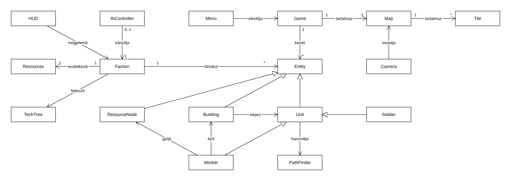
Game
Egy játszma. Ő tartja a pályát és mindent, ami rajta van, és frissíti őket.
Map
A pálya. Csempékből álló rács, fájlból töltődik be.
Tile
Egy mező a pályán. Tudja, hogy járható-e, és hogy áll-e rajta valami.
Entity
Minden, ami a pályán van: épület, egység, lelőhely. Ez a közös ős, itt van a helye és az életereje.
Menu
A menük: főmenü, új játék beállításai, beállítások, szünet menü. Innen indul a játék.
HUD
A játék közbeni felület: a nyersanyagok, a minimap és a kijelölt egység vagy épület adatai.
Camera
A pálya éppen látható része. A játékos billentyűvel, az egérrel a képernyő szélén vagy a minimapen mozgatja.
Faction
Az egyik fél a játszmában, a játékosé vagy a gépé. Övé a nyersanyag, az épületek és az egységek. Egy játszmában kettő van belőle.
Resources
Egy fél nyersanyagai: fa, arany, kő, acél, étel, és a népesség.
TechTree
A fejlődési szintek és fejlesztések. Megmondja, mit lehet már építeni vagy képezni.
Building
Egy épület, pl. főépület, kaszárnya, farm. Egyes épületek egységeket képeznek.
ResourceNode
Egy lelőhely a pályán: erdő, aranyér, kőbánya, érc. A munkások innen gyűjtenek, és egyszer kiürül.
Unit
Egy egység. Tud mozogni és támadni, parancsot a játékostól vagy az MI-től kap.
Worker
A munkás. Nyersanyagot gyűjt és épít.
Soldier
Katona: közelharci, íjász vagy nehéz egység. Csak harcol.
PathFinder
Az útvonalkereső (A*). Megmondja egy egységnek, merre menjen, hogy ne ütközzön akadályba.
AIController
A gépi ellenfél. A gép oldalát irányítja: gyűjt, épít, egységet képez és támad.
A rendszert öt alrendszerre bontottuk. Nagyjából az SRS 8.1-ben leírt három rész szerint mentünk (motor, játéklogika, kezelőfelület), csak a játéklogikát szétszedtük háromra, mert az egy embernek túl sok lett volna, és így könnyebb volt szétosztani. Minden alrendszernek van egy felelőse, ő írta a hozzá tartozó fejezetet. Molnár Levente nem kapott alrendszert: ő felel a szótárért és a konzisztencia-ellenőrzésért, vagyis hogy a fejezetekben ugyanazok legyenek a nevek és a hivatkozások. A rendszertervben ő írta az adatmodellt és a use case-ek kivételes eseteit.
A csomagdiagramon a szaggatott nyíl azt jelenti, hogy az egyik alrendszer használja a másikat. Mindenki használja a Motort. A Motorból csak pár értesítés megy vissza a többiekhez (pl. a Game szól a Selectionnek, ha valami megsemmisült, lásd 3.2. ábra), ezeket a csomagdiagramon nem rajzoltuk be. A Kezelőfelület használja a játéklogikát, de fordítva nem, a felület csak kiolvassa, amit meg kell mutatni.
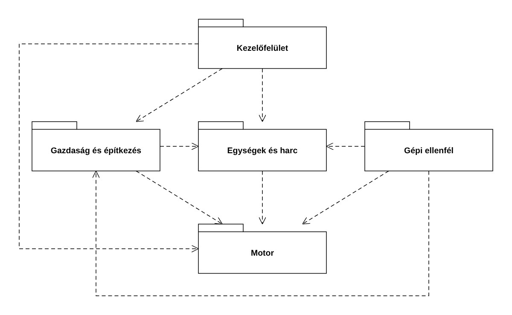
Az ablak, a rajzolás, a bemenet, az időzítés, a fájlok betöltése és a pálya. Erre épül minden más. Felelős: Lőrincz Loránd László. Részletesen a 3. fejezetben.
Osztályok: Game, Map, Tile, Entity.
A menük, a HUD, a kamera és a kijelölés. A játékos ezen keresztül ad parancsot. Felelős: Martis Milán. Részletesen a 4. fejezetben.
Osztályok: Menu, HUD, Camera.
A nyersanyagok, a gyűjtés, az épületek és a technológiafa. Felelős: Pozsgai Marcell. Részletesen az 5. fejezetben.
Osztályok: Faction, Resources, TechTree, Building, ResourceNode.
Az egységek, a mozgás, az útvonalkeresés és a harc. Felelős: Kiss Balázs. Részletesen a 6. fejezetben.
Osztályok: Unit, Worker, Soldier, PathFinder.
A gép oldalának irányítása: bázisépítés és támadás. Felelős: Kiss Balázs. Részletesen a 7. fejezetben.
Osztályok: AIController.
A motor a játék alja, erre épül a másik négy alrendszer. Ide tartozik az ablak, a rajzolás, az egér és a billentyűzet kezelése, az időzítés, a képek és a konfigurációs fájlok betöltése, a naplózás, a térkép és a közös ős, az Entity. Az SRS-ből az F-MOT követelmények tartoznak ide, use case nincs hozzá. A motor maga nem tud semmit a nyersanyagokról, az egységekről vagy az MI-ről, csak futtatja őket.
Néhány osztály, amit itt használunk, más fejezetben van leírva. Ezek a rajzokon szürkén szerepelnek, leírás nélkül:
A kezdeti osztálydiagramon a Game volt a fő osztály. Az analízis közben kiderült, hogy ez így nem jó, mert a Game egy mérkőzés: a ScreenManager hozza létre, amikor a játékos megnyomja a Start gombot, és megszűnik, ha kilép a főmenübe (4.1. ábra). A program viszont a főmenüben is fut. Ezért bekerült egy új osztály, az Engine, ami a program elejétől a végéig él, és a fő ciklust futtatja.
A legtöbb motorosztálynak kevés adata van, mert inkább csak továbbad dolgokat. A fontosabbak:
A pontos listák a 3.6 pontban vannak.
Az Entity a közös ős, ezt már a 2. fejezetben rögzítettük. Ebből származik a Building (5. fejezet), a Unit (6. fejezet) és a ResourceNode (5. fejezet). Azért kell, hogy a Game, a Map és a Renderer ne foglalkozzon azzal, hogy éppen egységről, épületről vagy lelőhelyről van szó. A Game minden körben minden Entitynek meghívja az update() és a draw() műveletét, a többit a leszármazott dönti el.
Az Entityből közvetlenül nem lesz példány, ezért absztrakt osztály. Az életereje mindegyiknek van, a lelőhelynél is, mert így minden ugyanúgy kezelhető, ha valami megsemmisül vagy kiürül.
A motor többi osztálya nem származik semmiből, és belőlük sem származik semmi.
Az Engine run() művelete egy ciklus, ami addig megy, amíg a játékos ki nem lép. Egy körben három dolog történik:
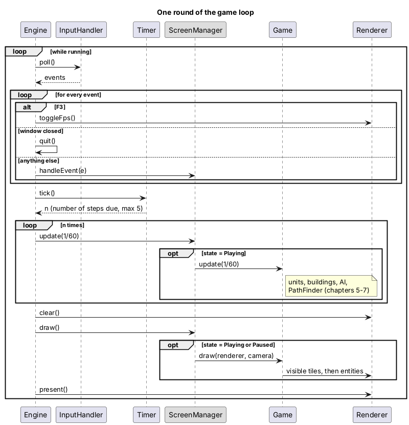
Ezt a Kezelőfelület és az Egységek és harc fejezet is használja, ezért itt külön is leírjuk. Ha egy egység vagy épület sebzést kap, és elfogy az életereje, szól a Game-nek (removeEntity). A Game kiveszi a listából, a Map felszabadítja a mezőit, és ha épület volt, szól a PathFindernek, hogy ezek a mezők megint járhatók (F-UTV-07). A Selection is kiveszi a kijelölésből. Ha főépület volt, a mérkőzés véget ér, és a Game szól a ScreenManagernek, hogy nyert vagy vesztett a játékos (F-HARC-18).
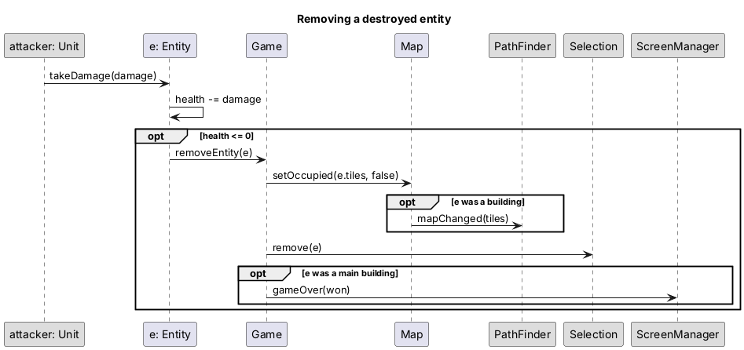
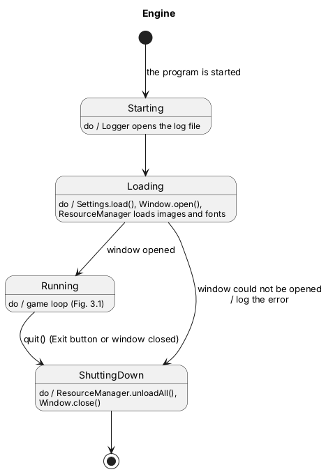
Amit tudni kell hozzá: mennyi idő telt el az előző kör óta. Az eredmény, hogy hányszor kell frissíteni.
Így a játék ugyanolyan gyorsan megy egy lassabb gépen is, csak kevesebb lesz az FPS (SRS 8.1).
Amit tudni kell hozzá: a kép neve. Az eredmény a kép, vagy ha nincs meg, a helyettesítő kép.
Amit tudni kell hozzá: a kamera helye és a képernyő mérete. Az eredmény a kirajzolandó csempék és entitások.
Az osztályok fő műveletei (hogy mit kapnak és mit csinálnak, az a 3.6 pont táblázataiban van):
A Game műveletei közül többet a többi alrendszer kért: az entityAt() és a unitsInRect() a kijelöléshez kell (4.2. ábra), a hasRoom() és a spawn() az egységképzéshez (UC-02 Egység kiképzése), az entitiesInRange() a harchoz és az MI-hez, a removeEntity() pedig a 3.2. ábrához.
A szürke osztályok más fejezetekhez tartoznak, ott vannak leírva.
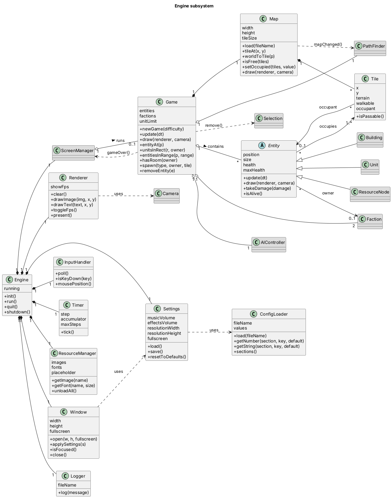
Felelősség: a program elejétől a végéig él, létrehozza a motor többi részét, és futtatja a fő ciklust (F-MOT-01, F-MOT-02, F-MOT-09).
Együttműködők: Window, Renderer, InputHandler, Timer, ResourceManager, Settings, Logger, ScreenManager (4. fejezet).
Attribútumok
| Név | Típus | Leírás |
|---|---|---|
| running | bool | Amíg igaz, megy a fő ciklus. |
| window, renderer, input, timer, resources, settings, logger | a motor osztályai | A motor részei, az Engine hozza létre őket. |
| screens | ScreenManager | A képernyőket kezelő osztály (4. fejezet). |
Operációk
| Név | Argumentumok | Működés |
|---|---|---|
| init | nincs | Megnyitja a naplót, betölti a beállításokat, megnyitja az ablakot, és létrehozza a ScreenManagert. Ha az ablak nem nyílik meg, hamisat ad (3.3. ábra). |
| run | nincs | A fő ciklus a 3.1. ábra szerint, amíg a running igaz. |
| quit | nincs | A running hamis lesz, így a ciklus a kör végén leáll. A Kilépés gomb és az ablak bezárása is ezt hívja. |
| shutdown | nincs | Felszabadítja a képeket, bezárja az ablakot és a naplót. |
Felelősség: a játék ablaka (F-MOT-01).
Együttműködők: Engine, Settings, Camera (4. fejezet).
Attribútumok
| Név | Típus | Leírás |
|---|---|---|
| width, height | int | Az ablak mérete pixelben, legalább 1280x720. |
| fullscreen | bool | Teljes képernyős-e. |
Operációk
| Név | Argumentumok | Működés |
|---|---|---|
| open | w, h: int, fullscreen: bool | Megnyitja az ablakot. Ha nem sikerül, hamisat ad. |
| applySettings | s: Settings | Átállítja a méretet és a módot, ha a játékos a beállításokban megváltoztatta. |
| isFocused | nincs | Igaz, ha az ablak aktív. A kamera csak ilyenkor mozog a képernyő szélénél (F-UI-09). |
| close | nincs | Bezárja az ablakot. |
Felelősség: mindent ez rajzol ki a képernyőre. Csak ez a rész hívja közvetlenül az SDL rajzoló függvényeit (SRS 8.1).
Együttműködők: Engine, ResourceManager, Camera (4. fejezet), Game, Map, Entity.
Attribútumok
| Név | Típus | Leírás |
|---|---|---|
| showFps | bool | Ki van-e írva a sarokban az FPS (F-MOT-08). |
Operációk
| Név | Argumentumok | Működés |
|---|---|---|
| clear | nincs | Letörli az előző képet. |
| drawImage | img: Image, x, y: int | Kirajzol egy képet a megadott helyre. |
| drawText | text: string, x, y: int | Kiír egy szöveget (feliratok, HUD, üzenetek). |
| toggleFps | nincs | F3-ra be- vagy kikapcsolja az FPS kiírását. |
| present | nincs | Megjeleníti a kész képet. Ha a showFps igaz, előtte kiírja az FPS-t. |
Felelősség: összegyűjti az egér- és billentyűeseményeket, és megmondja, mi van éppen lenyomva.
Együttműködők: Engine, ScreenManager (4. fejezet), Camera (4. fejezet).
Attribútumok
Nincs saját adata, az aktuális állapotot az SDL-től kérdezi.
Operációk
| Név | Argumentumok | Működés |
|---|---|---|
| poll | nincs | Visszaadja az előző kör óta jött eseményeket (kattintás, mozgás, billentyű, ablak bezárása) List<InputEvent> formában. |
| isKeyDown | key: Key | Igaz, ha a billentyű éppen le van nyomva. A kamera mozgatása ezt használja (F-UI-08). |
| mousePosition | nincs | Az egér helye az ablakban. |
Felelősség: megmondja, hányszor kell frissíteni a játékot, hogy másodpercenként 60 frissítés legyen (F-MOT-02).
Együttműködők: Engine.
Attribútumok
| Név | Típus | Leírás |
|---|---|---|
| step | float | Egy frissítés hossza, 1/60 másodperc. |
| accumulator | float | Az eltelt, még fel nem használt idő. |
| maxSteps | int | Egy körben legfeljebb ennyi frissítés lehet (5). |
Operációk
| Név | Argumentumok | Működés |
|---|---|---|
| tick | nincs | Megméri az előző óta eltelt időt, és visszaadja, hány frissítés esedékes (3.3.1). |
Felelősség: betölti a képeket és a betűtípusokat, és megőrzi őket, hogy mindegyik csak egyszer töltődjön be (F-MOT-06).
Együttműködők: Engine, Renderer, Logger.
Attribútumok
| Név | Típus | Leírás |
|---|---|---|
| images | Map<string, Image> | A már betöltött képek név szerint. |
| fonts | Map<string, Font> | A már betöltött betűtípusok. |
| placeholder | Image | A lila kép, ami a hiányzó képek helyére kerül. |
Operációk
| Név | Argumentumok | Működés |
|---|---|---|
| getImage | name: string | Visszaadja a képet a 3.3.2 szerint. Ha nincs meg, a helyettesítőt adja, és naplóz. |
| getFont | name: string, size: int | Ugyanígy a betűtípusokra. |
| unloadAll | nincs | Kilépéskor felszabadít mindent. |
Felelősség: beolvas egy kulcs = érték formátumú fájlt, és szakaszonként eltárolja az értékeket. A részletes terve és a fájlok formátuma az RTERV 3. fejezetében van (F-MOT-07).
Együttműködők: Settings, Logger, és mindenki, akinek adat kell a konfigurációs fájlból (BuildingType, UnitType, DamageCalculator, Difficulty).
Attribútumok
| Név | Típus | Leírás |
|---|---|---|
| fileName | string | Melyik fájlt olvasta be. |
| values | szakasz, kulcs, érték | A beolvasott értékek. |
Operációk
| Név | Argumentumok | Működés |
|---|---|---|
| load | fileName: string | Beolvassa a fájlt. Ha nincs meg, hamisat ad és naplóz. |
| getNumber | section, key: string, default: float | Visszaadja a számot. Ha a kulcs hiányzik vagy nem szám, az alapértéket adja, és naplóz. |
| getString | section, key, default: string | Ugyanez szövegre. |
| sections | nincs | A fájl szakaszainak nevei, pl. az összes egységtípus. |
Felelősség: a játékos beállításai, amik a következő indításkor is megmaradnak (F-UI-05, F-UI-06).
Együttműködők: ConfigLoader, Window, SettingsMenu (4. fejezet).
Attribútumok
| Név | Típus | Leírás |
|---|---|---|
| musicVolume, effectsVolume | int (0-100) | A zene és a hangeffektek hangereje. |
| resolutionWidth, resolutionHeight | int | A felbontás, alapból 1280x720. |
| fullscreen | bool | Teljes képernyő vagy ablak, alapból ablak. |
Operációk
| Név | Argumentumok | Működés |
|---|---|---|
| load | nincs | Beolvassa a beállításfájlt. Ha nincs meg vagy hibás, az alapértékeket használja (F-MOT-01). |
| save | nincs | Kiírja a beállításokat a fájlba. |
| resetToDefaults | nincs | Visszaállítja az alapértékeket. |
Felelősség: a hibákat a konzolra és egy naplófájlba írja, hogy fejlesztés közben gyorsan meg lehessen találni őket (SRS 7.4).
Együttműködők: Engine, ResourceManager, ConfigLoader.
Attribútumok
| Név | Típus | Leírás |
|---|---|---|
| fileName | string | A naplófájl neve. |
Operációk
| Név | Argumentumok | Működés |
|---|---|---|
| log | message: string | Kiírja az üzenetet az idővel együtt. |
Felelősség: egy mérkőzés. Tartja a térképet, a két felet és a pályán lévő összes entitást, és minden körben frissíti és kirajzolja őket.
Együttműködők: ScreenManager, Selection (4. fejezet), Faction (5. fejezet), PathFinder (6. fejezet), AIController (7. fejezet), Map, Entity, Renderer, Camera.
Attribútumok
| Név | Típus | Leírás |
|---|---|---|
| map | Map | A pálya. |
| entities | List<Entity> | Minden, ami a pályán van. |
| factions | List<Faction> | A két fél: a játékos és a gépi ellenfél. |
| ai | AIController | A gépi ellenfél (7. fejezet). |
| pathFinder | PathFinder | Az útvonalkereső (6. fejezet). |
| unitLimit | int | Legfeljebb ennyi egysége lehet egy félnek, alapból 200 (F-HARC-07). |
Operációk
| Név | Argumentumok | Működés |
|---|---|---|
| newGame | difficulty: string | Az új játék beállításai után a ScreenManager hívja. Betölti a pályát, létrehozza a két felet a kezdő főépülettel és munkásokkal, és az MI-t a kiválasztott nehézséggel. Visszaadja a játékos főépületét, hogy a kamera oda álljon. |
| update | dt: float | Frissíti az összes entitást, a feleket, a PathFindert és az MI-t. |
| draw | renderer: Renderer, camera: Camera | Kirajzolja a pálya látható részét és a rajta lévő entitásokat a 3.3.3 szerint. |
| entityAt | p: Point | Visszaadja azt az egységet vagy épületet, ami a ponton van, vagy semmit. Ha egység és épület is van ott, az egységet. A Selection hívja egy kattintásnál. |
| unitsInRect | r: Rect, owner: Faction | Visszaadja a tulajdonos összes egységét, ami a téglalapban van. Épületet nem ad vissza. A Selection hívja a téglalapos kijelölésnél (4.2. ábra). |
| entitiesInRange | p: Point, range: float | Visszaadja az entitásokat egy ponttól adott távolságon belül. A harc és az MI ezzel keresi a közeli ellenséget. |
| hasRoom | owner: Faction | Igaz, ha a félnek még az egységlimit alatt van az egységszáma (F-HARC-07). |
| spawn | type: UnitType, owner: Faction, tile: Tile | Létrehoz egy új egységet a megadott mezőn, és felveszi a listába (UC-02 Egység kiképzése). |
| removeEntity | e: Entity | Kiveszi a megsemmisült egységet vagy épületet a pályáról, és szól a Selectionnek, hogy vegye ki a kijelölésből (Selection.remove()). Ha főépület volt, véget ér a mérkőzés, és szól a ScreenManagernek, hogy a játékos nyert vagy vesztett (ScreenManager.gameOver(), F-HARC-18). |
Felelősség: a pálya csempékből álló rácsa. Tudja, melyik mező szabad, és szól, ha valami változik rajta (F-MOT-03).
Együttműködők: Game, Tile, Entity, PathFinder (6. fejezet), Building (5. fejezet), Renderer, Camera.
Attribútumok
| Név | Típus | Leírás |
|---|---|---|
| width, height | int | A pálya mérete csempében, legfeljebb 128x128. |
| tileSize | int | Egy csempe mérete pixelben (32). |
| tiles | List<Tile> | A csempék soronként. |
Operációk
| Név | Argumentumok | Működés |
|---|---|---|
| load | fileName: string | Beolvassa a pályát a fájlból (SRS 7.2). |
| tileAt | x, y: int | Visszaadja a csempét a sor és oszlop alapján, vagy semmit, ha kívül esik. |
| worldToTile | p: Point | Megmondja, melyik csempén van egy pont a pályán. |
| isFree | tiles: List<Tile> | Igaz, ha mind járható és senki nem áll rajtuk. A Building.canPlaceAt() ezt használja (UC-01 Épület lerakása). |
| setOccupied | tiles: List<Tile>, value: bool | Foglaltra vagy szabadra állítja a mezőket. Ha épület miatt változtak, szól a PathFindernek (PathFinder.mapChanged()). |
| draw | renderer: Renderer, camera: Camera | Kirajzolja a látható csempéket. |
Felelősség: egy mező a pályán. A PathFinder és az építkezés ebből tudja, hova lehet menni és építeni.
Együttműködők: Map, Entity, PathFinder (6. fejezet).
Attribútumok
| Név | Típus | Leírás |
|---|---|---|
| x, y | int | Hányadik oszlop és sor. |
| terrain | Terrain: Grass, Dirt, Water | A terep fajtája, ettől függ a képe. |
| walkable | bool | Járható-e a terep miatt (a víz pl. nem). |
| occupant | Entity (lehet üres) | Az épület vagy lelőhely, ami a mezőn áll. |
Operációk
| Név | Argumentumok | Működés |
|---|---|---|
| isPassable | nincs | Igaz, ha a terep járható és nem áll rajta semmi. |
Felelősség: minden, ami a pályán van: épület, egység, lelőhely. Tudja, hol van, mekkora, és mennyi életereje maradt.
Együttműködők: Game, Map, Tile, Faction (5. fejezet), Building, ResourceNode (5. fejezet), Unit (6. fejezet).
Attribútumok
| Név | Típus | Leírás |
|---|---|---|
| position | Point | Hol van a pályán, pixelben. |
| size | int | Hány csempe széles és magas (egységnél 1). |
| owner | Faction (lehet üres) | Kié. A lelőhelyeknél üres. |
| health, maxHealth | int | A mostani és a legnagyobb életerő. |
Operációk
| Név | Argumentumok | Működés |
|---|---|---|
| update | dt: float | Minden frissítésnél meghívódik. Itt nem csinál semmit, a leszármazottak írják felül. |
| draw | renderer: Renderer, camera: Camera | Kirajzolja a képét, és ha ki van jelölve vagy sérült, az életerőcsíkját is. |
| takeDamage | damage: int | Levonja a sebzést az életerőből. Ha nullára vagy alá csökken, szól a Game-nek (3.2. ábra). |
| isAlive | nincs | Igaz, ha az életereje nagyobb nullánál. |
Ez a fejezet a kezelőfelületről szól, vagyis az SRS F-UI pontjairól. Ide tartoznak a menük (főmenü, új játék beállításai, szünet menü, beállítások, súgó, játék vége), a kamera, a HUD a minimappel, az információs panellel és a parancsmenüvel, az egységek kijelölése és a tooltipek. Saját use case-e nincs, de mindhárom use case itt kezdődik: a játékos a felületen kattint, és a felület adja tovább a parancsot a játéklogikának (UC-01 Épület lerakása, UC-02 Egység kiképzése, UC-03 Ellenség megtámadása).
Az SRS 8.1 szerint a felület nem számol semmit, csak megmutatja, ami a játéklogikában van, és továbbadja a játékos parancsait. Ezért itt egyik osztály sem változtat közvetlenül életerőt vagy nyersanyagot, ezt mindig az 5. és a 6. fejezet osztályai csinálják.
Néhány osztály, amit itt használunk, más fejezetben van leírva. Ezek a rajzokon szürkén szerepelnek, leírás nélkül:
A felület szinte semmit nem tárol a játékról. A nyersanyagokat, az életerőt és a képzési sort mindig a játéklogikától kérdezi le, amikor rajzol, így nem fordulhat elő, hogy a HUD mást mutat, mint ami a játékban van. Amit a felület maga tárol, az csak a saját állapota: melyik képernyő látszik, hol van a kamera, mi van kijelölve, melyik gomb fölött van az egér, és milyen üzenetek látszanak éppen.
A beállításokat (felbontás, ablakos mód, hangerő) nem a felület tárolja, hanem a Settings osztály (RTERV 3.4). A SettingsMenu csak addig tart meg egy másolatot, amíg a játékos el nem menti vagy el nem veti a változtatást. Az egyes osztályok adatai részletesen a 4.6 pontban vannak.
A Menu közös ős minden menünek. Tud gombokat rajzolni, kiemeli azt, amelyik fölött az egér van, és ha a játékos rákattint, szól a gombnak. A főmenü, a szünet menü, a játék vége képernyő és a kilépés előtti kérdés ("Quit to main menu?") csak abban különbözik, hogy milyen gombok vannak rajtuk és mi a címük. Ezért ezek nem kaptak külön osztályt, mindegyik egy-egy Menu példány.
A NewGameMenu, a SettingsMenu és a HelpScreen viszont tud mást is, mint gombot nyomni: az elsőben nehézséget kell választani, a másodikban csúszkák és egy felbontáslista vannak, a harmadik pedig fájlból olvas be szöveget és görgethető. Ezek külön osztályok, de a gombkezelést a Menutől öröklik.
A játékos a főmenüben a New Game gombra kattint. A ScreenManager átvált az új játék beállításaira, ahol alapból a normál nehézség van kiválasztva (F-UI-02). Ha a játékos a könnyűt akarja, rákattint. A Back gombbal a főmenübe jut vissza, a Start gombra pedig a ScreenManager létrehozza a Game-et a kiválasztott nehézséggel. A pálya, a két fél és az MI létrehozása már a Game dolga (3., 5. és 7. fejezet). Ha ez kész, a ScreenManager létrehozza a kamerát és a HUD-ot, a kamerát a játékos főépületére állítja, és átvált a játék képernyőre.
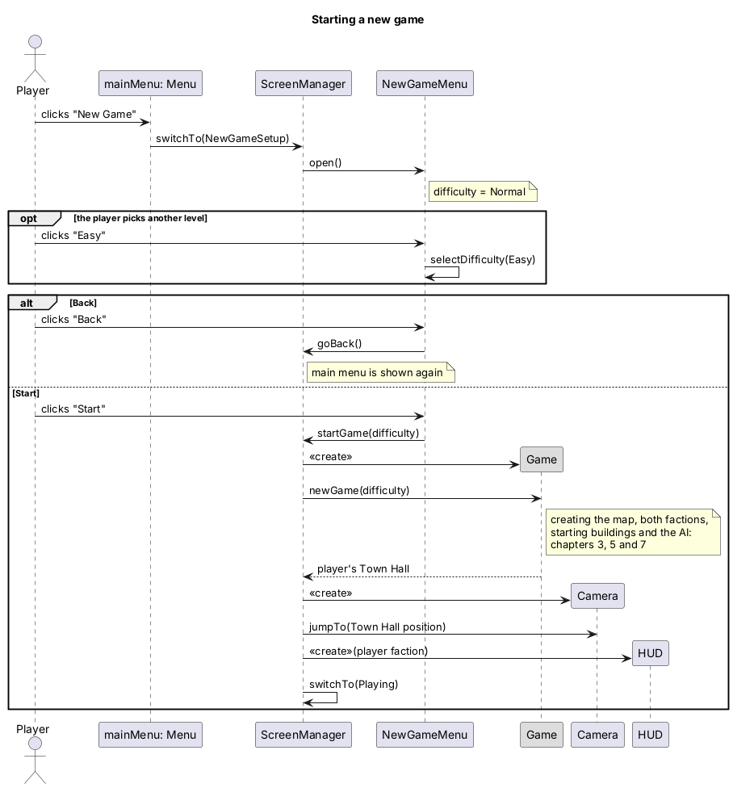
A játékos lenyomja a bal egérgombot a játéktéren. A ScreenManager először a HUD-ot kérdezi meg, hogy az ő területére esik-e a kattintás. Ha igen, a HUD kezeli (pl. gombot nyomtak), és a játéktér nem kap semmit (F-MOT-05). Ha nem, a Selection elkezdi a húzást. Amíg a gomb le van nyomva, a Selection minden mozdulatnál újrarajzolja a téglalapot. Amikor a játékos elengedi a gombot, a Selection a kamerával átszámolja a téglalap sarkait a pálya koordinátáira, és megkérdezi a Game-et, mely saját egységek vannak benne. Ha a Shift le volt nyomva, ezeket hozzáadja az eddigi kijelöléshez, ha nem, lecseréli vele (F-UI-12). A végén szól az InfoPanelnek és a CommandMenunek, hogy frissüljenek.
Ha a téglalap nagyon kicsi (4 pixelnél kisebb), az nem húzás, hanem sima kattintás. Ilyenkor a Selection azt az egy egységet vagy épületet jelöli ki, ami a kattintás helyén van. Ellenséges egységet is ki lehet így jelölni, hogy látszódjanak az adatai, de parancsot neki nem lehet adni. Téglalappal csak saját egységek jelölődnek ki, épület nem.
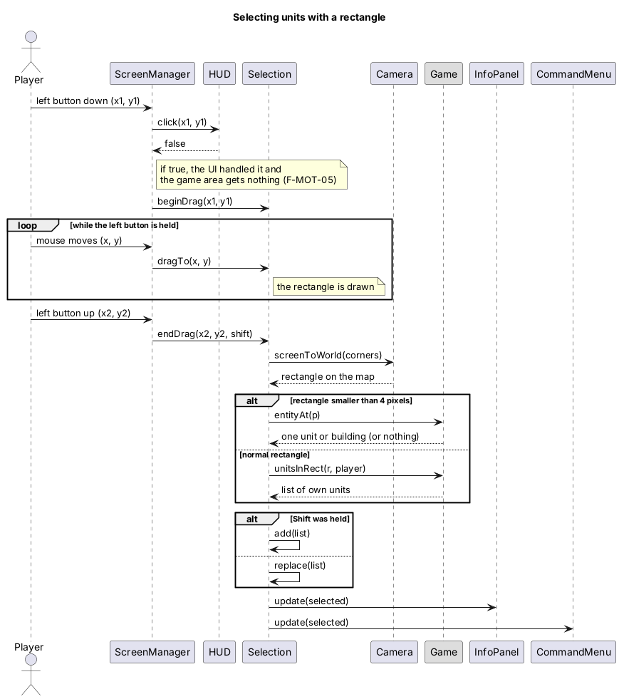
Az állapot azt mondja meg, melyik képernyő látszik. Egyszerre mindig csak egy:
Az ablak X gombja bármelyik állapotban ugyanazt csinálja, mint a főmenü Exit gombja (F-MOT-09). Ezt nem rajzoltuk be, hogy az ábra átlátható maradjon.
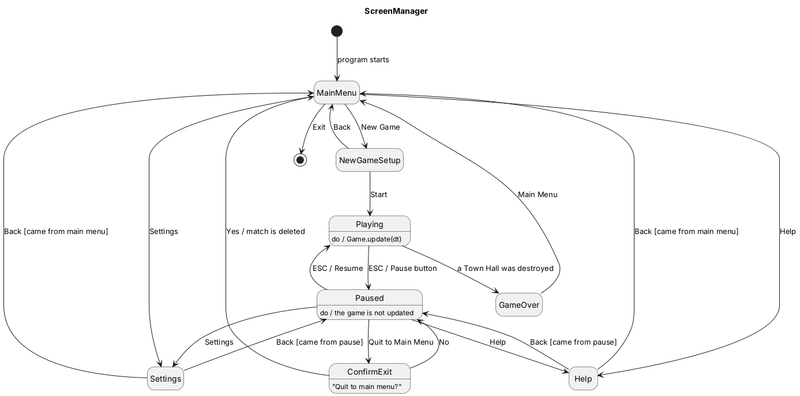
Amit tudni kell hozzá: mely billentyűk vannak lenyomva, hol van az egér, aktív-e az ablak, mennyi idő telt el az előző frissítés óta, és mekkora a pálya. Az eredmény a kamera új helye.
Ha a játékos a minimapre kattint, a kattintás helyét átszámoljuk a pályára (a minimap minden pixele adott számú csempének felel meg), a kamera közepét oda tesszük, és utána ugyanúgy visszahúzzuk a pályára (F-UI-10). Húzásnál ez minden egérmozdulatnál megtörténik.
Amit tudni kell hozzá: mi van kijelölve, és mire kattintott a játékos. Az eredmény az, hogy a kijelölt egységek milyen parancsot kapnak.
Ha épp épületet akar lerakni a játékos, a jobb klikk nem parancs, hanem megszakítja a lerakást (F-EPIT-04).
Amit tudni kell hozzá: melyik gomb fölött van az egér, és mennyi ideje. Az eredmény a tooltip szövege és helye.
Az osztályok fő műveletei (hogy mit kapnak és mit csinálnak, az a 4.6 pont táblázataiban van):
A Game-nek a kijelöléshez két lekérdezés kell: entityAt() és unitsInRect(). Ezek a Game-hez tartoznak, a 3. fejezetben vannak leírva.
A szürke osztályok más fejezetekhez tartoznak, ott vannak leírva.
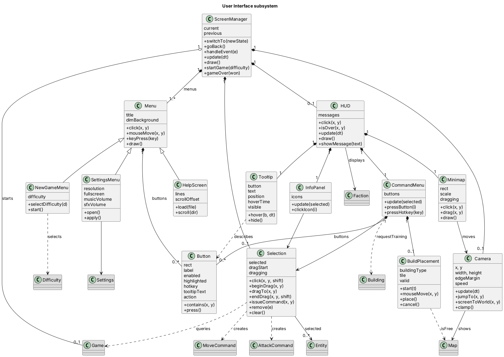
Felelősség: tudja, melyik képernyő látszik, átvált a képernyők között, és a bejövő egér- és billentyűeseményeket a megfelelő helyre küldi (F-UI-01, F-UI-03, F-UI-07).
Együttműködők: Menu, HUD, Camera, Selection, Game.
Attribútumok
| Név | Típus | Leírás |
|---|---|---|
| current | ScreenState: MainMenu, NewGameSetup, Settings, Help, Playing, Paused, ConfirmExit vagy GameOver | Melyik képernyő látszik (4.3. ábra). |
| previous | ScreenState | Honnan jött a játékos. Ebből tudja a Settings és a Help, hova vigyen vissza. |
| menus | List<Menu> | Az összes menü. |
| game | Game (lehet üres) | A futó mérkőzés. Üres, ha nincs mérkőzés. |
| hud, camera, selection | HUD, Camera, Selection (lehetnek üresek) | A mérkőzés alatti felület részei. |
Operációk
| Név | Argumentumok | Működés |
|---|---|---|
| switchTo | newState: ScreenState | Megjegyzi a régi állapotot az előzőben, és átáll az újra. |
| goBack | nincs | Visszaáll az előző állapotra (pl. a beállításokból a szünet menübe). |
| handleEvent | e: InputEvent | Az állapottól függően továbbadja az eseményt. Menüben a menünek. Játékban először a HUD-nak, és ha az nem kezelte, a Selectionnek vagy a BuildPlacementnek (F-MOT-05). Az ESC-t mindig ő kezeli. |
| update | dt: float | Playing állapotban frissíti a kamerát, a Game-et és a HUD-ot. Szünetben a Game-et nem frissíti, így minden megáll. |
| draw | nincs | Kirajzolja az aktuális képernyőt. Szünetben előbb a játékot, utána a sötétített hátteret és a menüt. |
| startGame | difficulty: string | Létrehozza a Game-et, a HUD-ot, a kamerát és a kijelölést, a kamerát a főépületre állítja, és átvált Playing állapotba. |
| gameOver | won: bool | A Game hívja, ha egy főépület megsemmisült. Beállítja a GameOver képernyő szövegét, és átvált rá. |
Felelősség: egy menüképernyő gombokkal. Kiemeli a gombot, ami fölött az egér van, és kattintáskor szól a gombnak. A főmenü, a szünet menü, a játék vége képernyő és a kilépés előtti kérdés egy-egy Menu.
Együttműködők: ScreenManager, Button, Tooltip.
Attribútumok
| Név | Típus | Leírás |
|---|---|---|
| title | string | A menü tetején látszik, pl. "Paused". |
| buttons | List<Button> | A menü gombjai, középre igazítva, egymás alatt (SRS 11.1). |
| dimBackground | bool | Igaz, ha a menü a játék fölé rajzolódik (szünet menü, kilépés előtti kérdés). |
Operációk
| Név | Argumentumok | Működés |
|---|---|---|
| click | x, y: int | Megkeresi a gombot, amelyikre kattintottak, és megnyomja. Ha nincs ott gomb, nem csinál semmit. |
| mouseMove | x, y: int | Kiemeli azt a gombot, amelyik fölött az egér van, a többit nem. |
| keyPress | key: Key | Ha valamelyik gombnak ez a gyorsbillentyűje, megnyomja. |
| draw | nincs | Kirajzolja a hátteret, a címet és a gombokat. |
Felelősség: egy gomb a menükben vagy a parancsmenüben. Tudja, hol van, mi van ráírva, és mi történjen, ha megnyomják.
Együttműködők: Menu, CommandMenu, Tooltip.
Attribútumok
| Név | Típus | Leírás |
|---|---|---|
| rect | Rect (x, y, width, height) | Hol van a gomb a képernyőn. |
| label | string vagy Image | Ami a gombon látszik. |
| enabled | bool | Ha hamis, a gomb szürke, és nem lehet megnyomni (F-EPIT-02, F-TECH-03). |
| highlighted | bool | Igaz, ha az egér fölötte van, ilyenkor más a színe (SRS 3.2.1). |
| hotkey | Key (lehet üres) | Ezzel a billentyűvel is meg lehet nyomni. |
| tooltipText | string (lehet üres) | Ezt írja ki a tooltip. |
| action | Action | Mi történjen megnyomáskor, pl. átváltás a beállításokra. |
Operációk
| Név | Argumentumok | Működés |
|---|---|---|
| contains | x, y: int | Igaz, ha a pont a gomb téglalapjában van. |
| press | nincs | Ha a gomb engedélyezett, végrehajtja a műveletét. Ha nem, nem csinál semmit. |
Felelősség: az új játék beállításai. Itt választja ki a játékos az MI nehézségét, alapból normál (F-UI-02).
Együttműködők: Menu (ős), ScreenManager, Difficulty.
Attribútumok
| Név | Típus | Leírás |
|---|---|---|
| difficulty | Easy vagy Normal | A kiválasztott szint. Minden megnyitáskor Normalra áll vissza. |
Operációk
| Név | Argumentumok | Működés |
|---|---|---|
| selectDifficulty | d: Easy vagy Normal | Megjegyzi a szintet, és a hozzá tartozó gombot kiemelve rajzolja. |
| start | nincs | A Start gomb hívja. Szól a ScreenManagernek, hogy indítsa el a mérkőzést ezzel a nehézséggel. |
Felelősség: a beállítások képernyő: felbontás, ablakos vagy teljes képernyős mód, és ha lesz hang, a zene és az effektek hangereje (F-UI-05, F-UI-06).
Együttműködők: Menu (ős), ScreenManager, Settings.
Attribútumok
| Név | Típus | Leírás |
|---|---|---|
| resolution | Resolution (width x height) | A listában kiválasztott felbontás, legalább 1280x720. |
| fullscreen | bool | Teljes képernyőn vagy ablakban fusson-e. |
| musicVolume, sfxVolume | int (0-100) | A két csúszka állása. Csak akkor látszanak, ha van hang. |
Operációk
| Név | Argumentumok | Működés |
|---|---|---|
| open | nincs | Átmásolja a Settings mostani értékeit a csúszkákba és a listába. |
| apply | nincs | Az Apply gomb hívja. Beírja az értékeket a Settingsbe, elmenti a fájlba, és ha a felbontás vagy a mód változott, átállítja az ablakot. A Back gomb mentés nélkül lép ki. |
Felelősség: a súgó képernyő. A játék célját, az irányítást és a fontosabb épületeket és egységeket írja le. A szöveget egy külön szövegfájlból olvassa be, nem a kódban van (SRS 9.2).
Együttműködők: Menu (ős), ScreenManager.
Attribútumok
| Név | Típus | Leírás |
|---|---|---|
| lines | List<string> | A beolvasott súgószöveg soronként. |
| scrollOffset | int | Hányadik sortól látszik a szöveg. |
Operációk
| Név | Argumentumok | Működés |
|---|---|---|
| load | file: string | Beolvassa a súgófájlt. Ha nincs meg, egy rövid hibaüzenetet mutat a súgó helyén, és beírja a naplóba. |
| scroll | dir: Up vagy Down | Egérgörgővel vagy a nyilakkal görgeti a szöveget, de a végén túl nem. |
Felelősség: a játék közbeni felület. Kirajzolja a felső sávot (nyersanyagok, népesség, Pause gomb), és összefogja a minimapet, az információs panelt, a parancsmenüt és a tooltipet. A játék közbeni üzeneteket is ő mutatja (F-UI-13, F-GAZD-07, SRS 9.3).
Együttműködők: ScreenManager, Faction, Minimap, InfoPanel, CommandMenu, Tooltip, TrainingQueue (6. fejezet, ez küld üzenetet).
Attribútumok
| Név | Típus | Leírás |
|---|---|---|
| player | Faction | Akinek a nyersanyagait és népességét mutatja. |
| messages | List<(string, float)> | A látszó üzenetek, pl. "Not enough gold!". Kb. 3 másodperc után eltűnnek. |
| minimap, infoPanel, commandMenu, tooltip | Minimap, InfoPanel, CommandMenu, Tooltip | A HUD részei. |
Operációk
| Név | Argumentumok | Működés |
|---|---|---|
| click | x, y: int | Ha a kattintás a HUD valamelyik részére esik, odaadja neki, és igazat ad vissza. Ha a játéktérre esik, hamisat (F-MOT-05). |
| isOver | x, y: int | Igaz, ha a pont a HUD valamelyik részén van. Ilyenkor nincs edge scroll a felső és alsó szélen, ha a HUD takarja. |
| update | dt: float | Csökkenti az üzenetek idejét, a lejártakat kiveszi, és frissíti a tooltipet. |
| draw | nincs | Kirajzolja a felső sávot, a részeit és az üzeneteket. A számokat mindig a Factiontől kérdezi le. |
| showMessage | text: string | Új üzenetet tesz ki. Ha ugyanez már látszik, csak az idejét indítja újra, hogy ne legyen tele a képernyő ugyanazzal. |
Felelősség: a bal alsó sarokban kicsiben mutatja a teljes pályát, a saját és az ellenséges egységeket más színnel, és egy fehér téglalappal, hogy hol van a kamera. Kattintásra és húzásra odaviszi a kamerát (F-UI-10).
Együttműködők: HUD, Camera, Map, Game.
Attribútumok
| Név | Típus | Leírás |
|---|---|---|
| rect | Rect (x, y, width, height) | Hol van a minimap a képernyőn. |
| scale | float | Hány pixel jut a minimapen egy csempére. |
| dragging | bool | Igaz, amíg a játékos lenyomva tartja a gombot a minimapen. |
Operációk
| Név | Argumentumok | Működés |
|---|---|---|
| click | x, y: int | Átszámolja a pontot a pályára, és a kamerát odaugratja (Camera.jumpTo()). |
| drag | x, y: int | Amíg a gomb le van nyomva, a kamera követi az egeret. |
| draw | nincs | Kirajzolja a terepet, az egységeket és épületeket pontként (kék a saját, piros az ellenség), és a kamera téglalapját. |
Felelősség: alul középen mutatja a kijelölt egység vagy épület nevét, képét és életerejét. Épületnél a képzési sort is, a hátralévő idővel. Ha több egység van kijelölve, kis ikonokat mutat (F-HARC-17).
Együttműködők: HUD, Selection, Entity, TrainingQueue.
Attribútumok
| Név | Típus | Leírás |
|---|---|---|
| icons | List<(Unit, Rect)> | Több kijelölt egységnél az ikonok és a helyük. |
Operációk
| Név | Argumentumok | Működés |
|---|---|---|
| update | selected: List<Entity> | Ha egy dolog van kijelölve, az adatait mutatja. Ha több, felépíti az ikonok listáját. Ha semmi, üres. |
| clickIcon | i: int | Csak azt az egy egységet hagyja kijelölve, amelyiknek az ikonjára kattintottak. |
Felelősség: jobb alul a kijelöléstől függő gombok. Munkásnál az építhető épületek, épületnél a képezhető egységek (főépületnél a szintlépés is), katonánál a Stop (SRS 11.1).
Együttműködők: HUD, Selection, Button, BuildPlacement, Building, Faction.
Attribútumok
| Név | Típus | Leírás |
|---|---|---|
| buttons | List<Button> | A most látszó gombok, legfeljebb 9 (3 x 3). |
| placement | BuildPlacement (lehet üres) | Az éppen zajló épületlerakás. |
Operációk
| Név | Argumentumok | Működés |
|---|---|---|
| update | selected: List<Entity> | Összerakja a gombokat. Minden képkockán megnézi, van-e elég nyersanyag és megvan-e a szint, és ha nincs, szürkére állítja a gombot (F-EPIT-02, F-TECH-03). |
| pressButton | i: int | Épületgombnál BuildPlacementet indít. Egységgombnál szól a kijelölt épületnek, hogy képezze ki (requestTraining(), 6.1. ábra). Stopnál a kijelölt katonák parancsát törli. |
| pressHotkey | key: Key | Az 1-9 számbillentyűk a gombokat nyomják meg balról jobbra, fentről lefelé. |
Felelősség: a kijelölés. Kezeli a kattintást, a téglalapos és a Shiftes kijelölést, kirajzolja a kört a kijelölt egységek alá, és jobb klikkre parancsot ad nekik (F-UI-12, F-HARC-10).
Együttműködők: ScreenManager, Camera, Game, Entity, Unit, MoveCommand, AttackCommand, InfoPanel, CommandMenu.
Attribútumok
| Név | Típus | Leírás |
|---|---|---|
| selected | List<Entity> | Ami ki van jelölve: saját egységek, vagy egy épület, vagy egy ellenséges egység. |
| dragStart | Point (x, y) | Hol nyomta le a játékos a gombot. |
| dragging | bool | Igaz, amíg a bal gomb le van nyomva a játéktéren. |
Operációk
| Név | Argumentumok | Működés |
|---|---|---|
| click | x, y: int, shift: bool | Kijelöli, ami a ponton van. Shifttel hozzáadja vagy kiveszi. Üres helyre kattintva megszünteti a kijelölést. |
| beginDrag | x, y: int | Megjegyzi a kezdőpontot. |
| dragTo | x, y: int | Frissíti a téglalapot, amit kirajzol. |
| endDrag | x, y: int, shift: bool | Kijelöli a téglalapban lévő saját egységeket a 4.2. ábra szerint. |
| issueCommand | x, y: int | Jobb klikkre a 4.3.2 pont szerint MoveCommandot vagy AttackCommandot ad a kijelölt egységeknek (Unit.receiveCommand()). |
| remove | e: Entity | Kiveszi a kijelölésből. A Game hívja, ha valami megsemmisült. |
| clear | nincs | Megszünteti a kijelölést. |
Felelősség: az épület lerakása közben az épület áttetsző képe, ami követi az egeret. Zöld, ha oda lehet építeni, piros, ha nem (F-EPIT-03). Hogy hova lehet építeni, és mi történik a lerakás után, az az 5. fejezetben van, ez az osztály csak a felület része.
Együttműködők: CommandMenu, Camera, Map, Building, Faction, HUD.
Attribútumok
| Név | Típus | Leírás |
|---|---|---|
| buildingType | BuildingType | Melyik épületet akarja lerakni a játékos. |
| tile | Tile | Melyik mezőn van most a kép bal felső sarka. |
| valid | bool | Le lehet-e rakni ide. Ettől függ a kép színe. |
Operációk
| Név | Argumentumok | Működés |
|---|---|---|
| start | t: BuildingType | Elkezdi a lerakást, a kép megjelenik az egérnél. |
| mouseMove | x, y: int | Átteszi a képet a mezőre, ami alatt az egér van, és megkérdezi a térképtől, szabad-e. |
| place | nincs | Bal klikkre: ha a hely szabad, átadja a lerakást a gazdaságnak (5. fejezet, UC-01), és véget ér. Ha nem szabad, nem csinál semmit, és a HUD kiírja: "Can't build here!". |
| cancel | nincs | Jobb klikkre vagy ESC-re véget ér, nem vonódik le semmi (F-EPIT-04). |
Felelősség: a gombok fölött megjelenő kis szövegdoboz (SRS 9.1), a 4.3.3 pont szerint.
Együttműködők: HUD, Menu, Button.
Attribútumok
| Név | Típus | Leírás |
|---|---|---|
| button | Button (lehet üres) | A gomb, ami fölött az egér van. |
| hoverTime | float (mp) | Mióta van az egér ezen a gombon. |
| text | string | Ami a dobozban van. |
| position | Point (x, y) | Hova kerül a doboz. |
| visible | bool | Látszik-e éppen. |
Operációk
| Név | Argumentumok | Működés |
|---|---|---|
| hover | b: Button, dt: float | Ha ugyanaz a gomb, mint eddig, növeli a várakozást, és fél másodperc után megjeleníti a dobozt. Ha másik gomb, újraindítja az időt. |
| hide | nincs | Eltünteti a dobozt, ha az egér nincs gomb fölött. |
Felelősség: megmondja, a pálya melyik része látszik. Mozog a billentyűkre és a képernyő szélére vitt egérre, és nem mehet ki a pályáról (F-UI-08, F-UI-09, F-UI-11). Zoom nincs.
Együttműködők: ScreenManager, Map, Minimap, Selection, BuildPlacement.
Attribútumok
| Név | Típus | Leírás |
|---|---|---|
| x, y | float (pixel) | A látható rész bal felső sarka a pályán. |
| width, height | int (pixel) | Mekkora rész látszik, a felbontásból jön. |
| speed | float (pixel/mp) | Milyen gyorsan megy a kamera. A konfigurációs fájlból jön. |
| edgeMargin | int (pixel) | Milyen közel kell lennie az egérnek a szélhez, hogy mozogjon a kamera (alapból 10). |
Operációk
| Név | Argumentumok | Működés |
|---|---|---|
| update | dt: float | A 4.3.1 pont szerint arrébb teszi a kamerát. |
| jumpTo | x, y: float | A kamera közepét a megadott pontra teszi, és meghívja a clamp() részt. |
| screenToWorld | x, y: int | Egy képernyőpontot átszámol a pálya koordinátáira (hozzáadja a kamera helyét). |
| clamp | nincs | Visszahúzza a kamerát a pálya területére. |
Ebben a részben a gazdaságról, az építkezésről és a technológiafáról van szó, vagyis az SRS F-GAZD, F-EPIT és F-TECH pontjairól. Ide tartozik az öt nyersanyag és a népesség kezelése, a lelőhelyek és a kitermelő épületek működése, az épületek lerakása és felépítése, valamint a fejlődési szintek és a kovácsműhely fejlesztései. A use case-ek közül az UC-01 Épület lerakása tartozik ide.
Néhány osztály, amit itt használunk, más fejezetben van leírva. Ezek a rajzokon szürkén szerepelnek, leírás nélkül:
Az épületek állandó adatai (költség, építési idő, életerő, szükséges fejlődési szint) a konfigurációs fájlban találhatók (F-EPIT-07), és a játék induláskor tölti be őket a BuildingType-ba. Ugyanígy a konfigurációs fájlból jönnek a szintlépés meg a fejlesztések árai, valamint az épületekbe beosztható munkások maximális száma is (F-TECH-05).
Egy konkrét épületnél csak az van eltárolva, ami játék közben változik: mennyi életereje maradt (ezt az Entitytől kapja), milyen állapotban van (szellemkép, épül, kész, lerombolva), és hol tart az építése. A Resources osztály egész számokban tárolja az öt nyersanyagot (fa, arany, kő, acél, étel), valamint a jelenlegi és a maximális népességet, hogy kerekítési hiba miatt se vesszen el egyetlen egységnyi nyersanyag sem (F-GAZD-05). Az egyes osztályok adatai részletesen az 5.6 pontban találhatók.
A Building a közös ős minden épülethez: megnézi, hogy szabad-e a hely a lerakáshoz, számolja az építés menetét, és kezeli az épület megsemmisülését. Magából a Buildingből csak a fal készül, mert annak nincs külön feladata, csupán elzárja az utat.
A többi épület azért kapott külön osztályt, mert mindegyik mást csinál játék közben: a DropOffBuilding átveszi a munkásoktól a nyersanyagot, a ProductionBuilding a beosztott munkások száma alapján folyamatosan termel, a House megnöveli a népességi korlátot, a Watchtower magától lövi a közelbe érő ellenséget (F-EPIT-08), a Blacksmithben pedig fejlesztéseket lehet vásárolni (F-TECH-04).
A játékos kijelöl egy munkást, megnyitja az építési menüt, és kiválaszt egy épületet (F-EPIT-01). Ha az adott épület a technológiafa miatt még nem érhető el, vagy nincs rá elég nyersanyag, a gomb szürke marad, és kattintáskor a HUD kiírja az okot (F-EPIT-02, F-TECH-03). Ha minden rendben, az épület Szellemkép állapotban megjelenik az egér alatt.
Amíg a játékos mozgatja az egeret, a rendszer minden mezőnél ellenőrzi, hogy szabad-e a hely: ha igen, zöld, ha foglalt, piros a körvonal (F-EPIT-03). Jobb klikkre vagy ESC-re az építés megszakad, és nem vonódik le semmi (F-EPIT-04). Bal klikkre a Resources levonja az épület árát, az épület Épül állapotba kerül, a mezők járhatatlanná válnak, a munkás pedig elindul, hogy felépítse (F-EPIT-05).
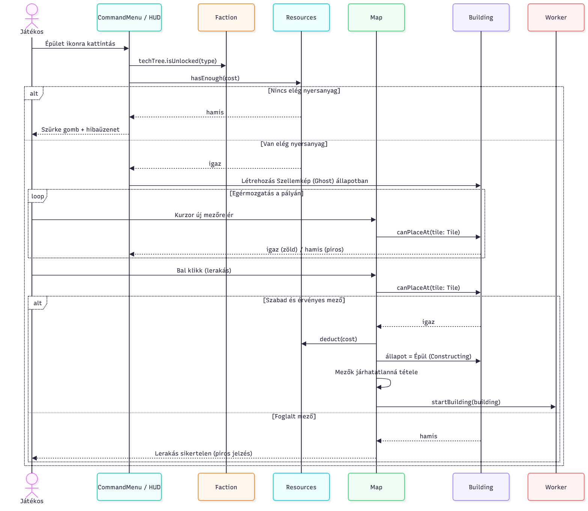
Egy épület négyféle állapotban lehet:
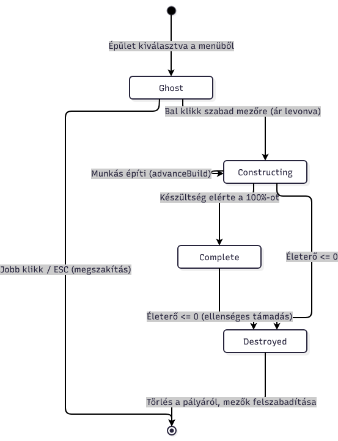
Amikor a munkás gyűjtési parancsot kap (GatherTask), a nyersanyag típusától függően kétféleképpen működik:
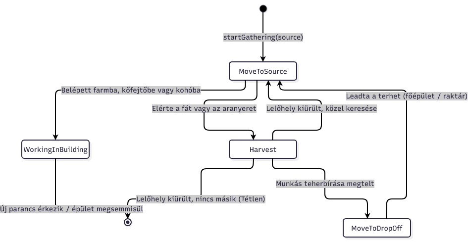
Amit tudni kell hozzá: a munkás mit gyűjt, vagy hány munkás dolgozik egy kitermelő épületben, illetve mennyibe kerül egy épület vagy egység. Az eredmény a frissített nyersanyagkészlet.
Amit tudni kell hozzá: a frakció jelenlegi szintje, a meglévő kész épületei és a nyersanyagkészlete. Az eredmény a következő fejlődési szint elérése.
Az osztályok fő műveletei (hogy mit kapnak és mit csinálnak, az az 5.6 pont táblázataiban szerepel):
A szürke osztályok más fejezetekhez tartoznak, ott vannak leírva.
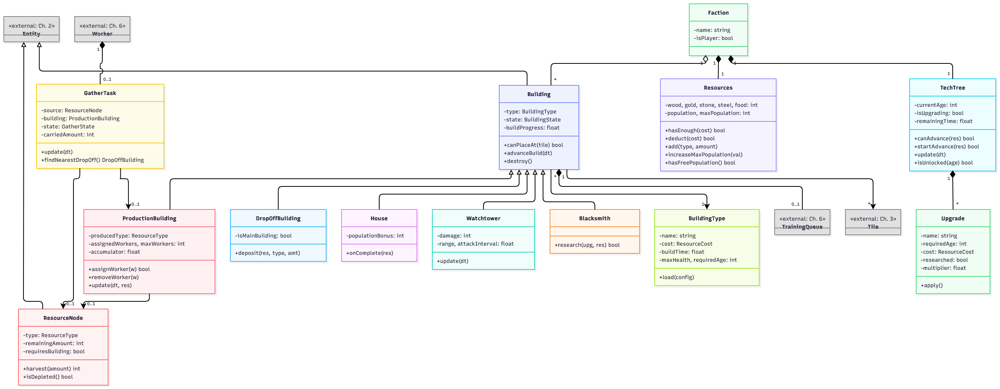
Felelősség: egy résztvevő fél (a játékos vagy a gépi ellenfél) gazdasági és technológiai adatait fogja össze.
Együttműködők: Resources, TechTree, Building, Unit (6. fejezet), AIController (7. fejezet).
Attribútumok
| Név | Típus | Leírás |
|---|---|---|
| name | szöveg | A fél neve (pl. "Player" vagy "AI"). |
| isPlayer | igaz/hamis | Megmondja, hogy ember irányítja-e vagy az MI. |
| resources | Resources | A fél saját nyersanyag- és népesség-nyilvántartása. |
| techTree | TechTree | A fél aktuális fejlődési szintje és megvett fejlesztései. |
Felelősség: nyilvántartja az öt nyersanyagot és a népességet, és gondoskodik róla, hogy egyik se mehessen mínuszba (F-GAZD-01, F-GAZD-05, F-GAZD-06).
Együttműködők: Faction, Building, TrainingQueue (6. fejezet), HUD (4. fejezet).
Attribútumok
| Név | Típus | Leírás |
|---|---|---|
| wood, gold, stone, steel, food | egész szám | Az egyes nyersanyagok aktuális mennyisége. |
| population | egész szám | Hány élő egysége van éppen a félnek. |
| maxPopulation | egész szám | Mennyi egysége lehet maximum (lakóházakkal nő, de legfeljebb 200). |
Operációk
| Név | Argumentumok | Működés |
|---|---|---|
| hasEnough | cost: ResourceCost | Igazat ad, ha mind az öt nyersanyagból megvan a kért mennyiség. |
| deduct | cost: ResourceCost | Ha van elég nyersanyag, levonja az árat és igazat ad, különben hamisat. |
| add | type: ResourceType, amount: int | Megnöveli a megadott nyersanyag mennyiségét. |
| increaseMaxPopulation | val: int | Megnöveli a maxPopulation értékét, de nem engedi a konfigurációs fájlban megadott egységlimit fölé. |
| hasFreePopulation | nincs | Igaz, ha a népesség kisebb a maxPopulationnél. |
Felelősség: egy nyersanyag-lelőhely a térképen (erdő, aranyér, szikla, érclelőhely). Véges mennyiséget tartalmaz, az életerejét az Entity ősosztálytól kapja (F-GAZD-04).
Együttműködők: Entity (ős), GatherTask, ProductionBuilding, Game.
Attribútumok
| Név | Típus | Leírás |
|---|---|---|
| type | ResourceType | Milyen nyersanyagot ad (Fa, Arany, Szikla vagy Érc). |
| remainingAmount | egész szám | Mennyi kitermelhető nyersanyag van még benne. |
| requiresBuilding | igaz/hamis | Igaz a sziklánál és az ércnél (kőfejtő vagy kohó kell rá), hamis a fánál és az aranyérnél. |
Operációk
| Név | Argumentumok | Működés |
|---|---|---|
| harvest | amount: int | Levon a maradék mennyiségből, és visszaadja, mennyit sikerült kivenni. Ha elfogyott, eltávolítja magát a pályáról. |
| isDepleted | nincs | Igaz, ha a maradék mennyiség elérte a nullát. |
Felelősség: egy munkás gyűjtési folyamatát irányítja az 5.3. ábra szerint (F-GAZD-03).
Együttműködők: Worker (6. fejezet), ResourceNode, ProductionBuilding, DropOffBuilding, PathFinder (6. fejezet).
Attribútumok
| Név | Típus | Leírás |
|---|---|---|
| source | ResourceNode (lehet üres) | Melyik erdőből vagy aranyérből gyűjt a munkás. |
| building | ProductionBuilding (lehet üres) | Melyik farmban, kőfejtőben vagy kohóban dolgozik a munkás. |
| state | GatherState | Hol tart éppen a gyűjtési ciklusban (MoveToSource, Harvest, MoveToDropOff, WorkingInBuilding). |
| carriedAmount | egész szám | Mennyi fát vagy aranyat cipel éppen a munkás. |
Operációk
| Név | Argumentumok | Működés |
|---|---|---|
| update | dt: float | Minden képkockán lépteti a gyűjtést: ha a lelőhelynél van, termel; ha megtelt, elindítja a legközelebbi leadópontra. |
| findNearestDropOff | nincs | Megkeresi a munkáshoz legközelebbi kész főépületet vagy raktárat. |
Felelősség: egy épület a térképen. Kezeli a lerakást, a felépülést és a megsemmisülést (F-EPIT-03 - F-EPIT-06).
Együttműködők: Entity (ős), BuildingType, Map, Tile, Worker, TrainingQueue.
Attribútumok
| Név | Típus | Leírás |
|---|---|---|
| type | BuildingType | Milyen épület ez, innen tudja az árát, életerejét és építési idejét. |
| state | BuildingState | Hol tart az épület az életciklusában (Ghost, Constructing, Complete, Destroyed). |
| buildProgress | tört szám (mp) | Mennyi idő telt el eddig az építésből. |
Operációk
| Név | Argumentumok | Működés |
|---|---|---|
| canPlaceAt | tile: Tile | Megnézi, hogy az épület alatti összes mező szabad-e (és kőfejtő vagy kohó esetén megfelelő lelőhelyen van-e). |
| advanceBuild | dt: float | Növeli a készültséget. Ha eléri az építési időt, Complete állapotba vált. |
| destroy | nincs | Destroyed állapotba kerül, újra járhatóvá teszi a mezőket, és szól a Game-nek, hogy vegye ki. |
Felelősség: egy épületfajta állandó adatai a konfigurációs fájlból (F-EPIT-07).
Együttműködők: ConfigLoader, Building, TechTree.
Attribútumok
| Név | Típus | Leírás |
|---|---|---|
| name | szöveg | Az épület neve a felületen (pl. "Barracks"). |
| cost | ResourceCost | Mennyi fa, arany, kő és acél kell hozzá. |
| buildTime | tört szám (mp) | Mennyi ideig tart felépíteni. |
| maxHealth | egész szám | Ennyi életereje van kész állapotban. |
| requiredAge | egész szám (1-3) | Melyik fejlődési szinttől építhető. |
Operációk
| Név | Argumentumok | Működés |
|---|---|---|
| load | config: ConfigLoader | Beolvassa az épületek adatait. Hibás vagy hiányzó adatnál alapértéket használ (F-MOT-07). |
Felelősség: a Building konkrét leszármazottai, amelyek a saját feladataikat látják el, ha már Complete állapotban vannak.
Együttműködők: Building (ős), Resources, GatherTask, TechTree, Upgrade, Entity.
Attribútumok és operációk
| Osztály | Saját attribútumok | Főbb operációk |
|---|---|---|
| DropOffBuilding | isMainBuilding: bool | deposit(resources, type, amount): átveszi a munkástól a fát vagy aranyat és jóváírja. Ha főépület és megsemmisül, vége a játéknak. |
| ProductionBuilding | producedType, assignedWorkers, maxWorkers, accumulator | assignWorker(w), removeWorker(w), update(dt, resources): a beosztott munkások alapján folyamatosan termeli a követ, acélt vagy ételt (F-GAZD-02). |
| House | populationBonus: int | onComplete(resources): felépüléskor megnöveli a maxPopulation értékét (F-GAZD-06). |
| Watchtower | damage, range, attackInterval | update(dt): megkeresi a hatótávján belüli legközelebbi ellenséget, és meglövi (F-EPIT-08). |
| Blacksmith | nincs saját adat | research(upgrade, resources): elindítja egy Upgrade megvásárlását (F-TECH-04). |
Felelősség: kezelik a három fejlődési szintet és a kovácsműhelyben megvásárolható egyszeri fejlesztéseket (F-TECH-01 - F-TECH-05).
Együttműködők: Faction, Resources, Building, Blacksmith, ConfigLoader.
Attribútumok
| Név | Típus | Leírás |
|---|---|---|
| currentAge | egész szám (1, 2 vagy 3) | A frakció jelenlegi fejlődési szintje. |
| isUpgrading | igaz/hamis | Éppen zajlik-e szintlépés a főépületben. |
| remainingTime | tört szám (mp) | Mennyi idő van még hátra a szintlépésből. |
| upgrades | Upgrade-ek listája | A kovácsműhelyben elérhető kutatások (név, ár, szorzó, kutatva jelző). |
Operációk
| Név | Argumentumok | Működés |
|---|---|---|
| canAdvance | resources: Resources | Ellenőrzi, van-e elég nyersanyag, és megvan-e a kész kaszárnya (2. szint) vagy kovácsműhely (3. szint). |
| startAdvance | resources: Resources | Levonja az árat és elindítja a szintlépés időzítőjét. |
| update | dt: float | Csökkenti a hátralévő időt; ha lejár, növeli a currentAge értékét. |
| isUnlocked | requiredAge: int | Igazat ad, ha a currentAge eléri a megadott értéket (a HUD ez alapján szürkíti a gombokat). |
Ebben a részben az egységekről és a harcról van szó, vagyis az SRS F-HARC és F-UTV pontjairól. Ide tartozik az egységek képzése, a mozgás- és támadásparancs, a sebzés kiszámolása és az, hogy az egységek hogyan találnak utat a térképen (A*). A use case-ek közül az UC-02 Egység kiképzése és az UC-03 Ellenség megtámadása tartozik ide.
Néhány osztály, amit itt használunk, más fejezetben van leírva. Ezek a rajzokon szürkén szerepelnek, leírás nélkül:
Az egységtípusok adatai (ár, képzési idő, életerő, sebzés, hatótáv, sebesség) a konfigurációs fájlban vannak (F-HARC-04), a játék ezeket a UnitType-ba tölti be. Kell még három adat típusonként, ami az SRS felsorolásából kimaradt: a védelem a sebzés képletéhez (F-HARC-14), a látótáv és a két ütés közti idő pedig az automatikus támadáshoz (F-HARC-12, F-HARC-13). Ezek is a konfigurációs fájlba kerülnek.
Egy konkrét egységnél csak az van eltárolva, ami játék közben változik: hány életereje maradt (ezt az Entitytől kapja), mit csinál éppen, mi a parancsa, merre megy, és mennyi idő telt el az utolsó ütése óta. A szorzó attól függ, hogy ki kit üt, ezért a szorzókat egy táblázatban a DamageCalculator tárolja. Azt, hogy legfeljebb hány egység lehet a pályán (F-HARC-07), a Game tudja. Az egyes osztályok adatai részletesen a 6.6 pontban vannak.
A Unit csak közös ős, magából nem csinálunk egységet, csak a Workerből vagy a Soldierből. Ez a kettő azért külön osztály, mert másképp viselkednek: a munkás gyűjt és épít, és magától nem támad (F-HARC-02), a katona viszont rátámad az ellenségre, ha az a közelébe jön (F-HARC-12).
A közelharci katona, az íjász és a nehézegység ugyanúgy viselkedik, csak a számaik mások (hatótáv, sebzés, sebesség stb.). Ezért nem kaptak külön osztályt, mindhárom egy-egy UnitType. Ha később új egységet akarunk, elég beírni a konfigurációs fájlba.
A Command is csak közös ős. A MoveCommand és az AttackCommand a saját execute() részében mondja meg az egységnek, mit csináljon és hová menjen.
A játékos rákattint a kaszárnyájára (vagy a főépületére), aztán a menüben kiválaszt egy egységet. A kaszárnya (Building) ezt továbbadja a saját TrainingQueue-jának. A sor először megkérdezi a Game-et, hogy belefér-e még egy egység a limitbe, utána a Resources-t, hogy van-e elég fa és arany. Ha minden rendben, rögtön levonja az árat, és beteszi az egységet a sor végére. Minden képkockán csökken a sor elején álló egység hátralévő ideje, és amikor eléri a nullát, a Game megcsinálja az új egységet az épület melletti első szabad mezőn.
Ha nincs elég nyersanyag, a képzés el sem indul, és a HUD kiírja, hogy mi a gond (F-HARC-06). A többi hibás esetet (tele van a létszám, lerombolták a kaszárnyát) az RTERV 4. fejezete rajzolja le.
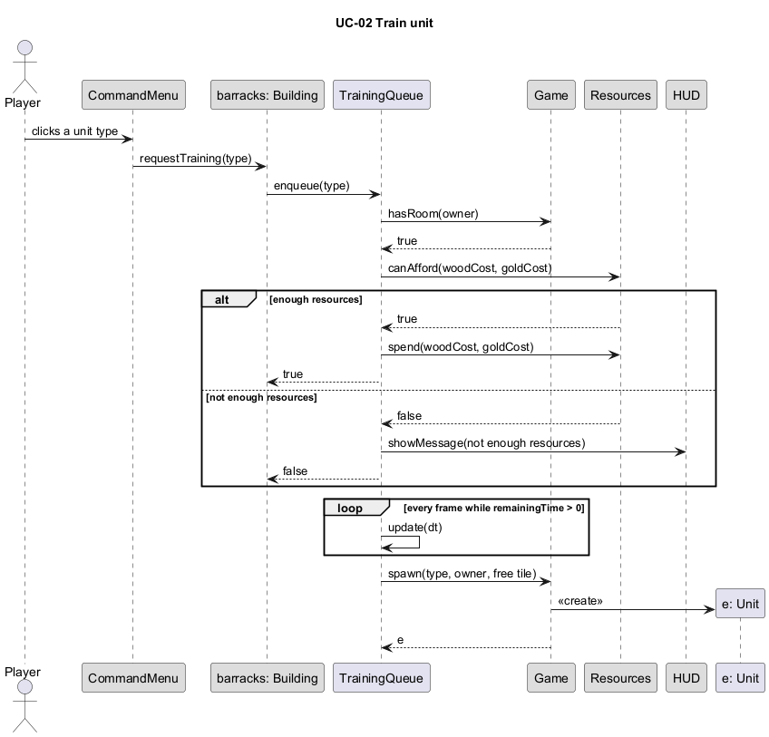
A játékos kijelöl egy vagy több egységet, és jobb gombbal rákattint egy ellenséges egységre vagy épületre (F-HARC-10). Ekkor a Selection minden kijelölt egységnek ad egy AttackCommandot. Ha a célpont túl messze van, az egység utat kér a PathFindertől, és elindul felé (F-HARC-11). Amikor elég közel ér, megáll és ütni kezdi. Az ütések között mindig eltelik a típusnál megadott idő. Minden ütésnél a DamageCalculator kiszámolja, mennyit sebez, és ennyi lejön a célpont életerejéből (F-HARC-13, F-HARC-15). Ha a célpont életereje elfogy, eltűnik a térképről (F-HARC-16), a támadó pedig megáll. Ha egy főépület tűnt el, vége a meccsnek (F-HARC-18).
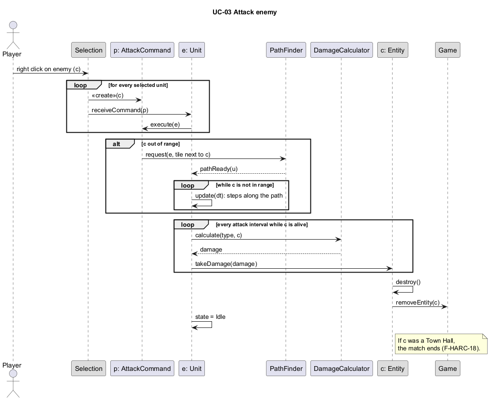
Egy egység négyféle állapotban lehet:
Új parancsot bármikor kaphat, amíg él, és ilyenkor a régit elfelejti. Hogy a munkás hogyan gyűjt és épít, az az 5. fejezetben van, a munkás gyűjtésénél.
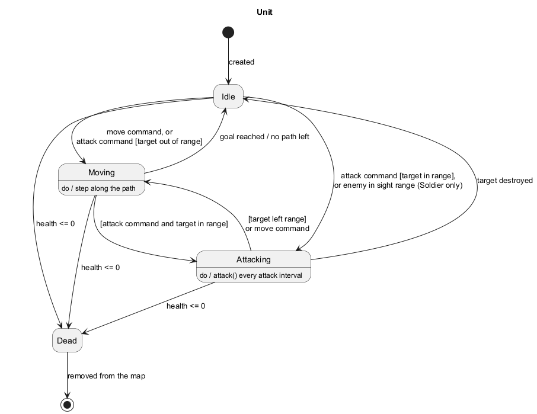
Amit tudni kell hozzá: a támadó típusa (mennyit sebez és milyen fajta), meg a célpont fajtája és védelme. A fajta lehet munkás, közelharci, íjász, nehéz vagy épület. Az eredmény az, hogy mennyi életereje marad a célpontnak.
Egy példa kitalált számokkal (az igaziak majd a konfigurációs fájlban lesznek). Az SRS szerint a nehézegység főleg épületek ellen jó. Mondjuk 20-at sebez, épület ellen 2-es a szorzója, és az épület védelme 5. Ekkor 20 x 2 - 5 = 35 a sebzés. Egy íjász (8-as sebzés, 0,5-ös szorzó) ugyanennek az épületnek csak max(1, 4 - 5) = 1-et sebez.
Amit tudni kell hozzá: honnan indul az egység, hová akar menni, és melyik mezőre lehet lépni. Az eredmény egy Path, vagyis mezők listája, ami üres is lehet.
Minden mezőt csak egyszer pipálunk ki, ezért a keresés biztosan véget ér akkor is, ha nincs út (F-UTV-05).
Ha 100 egység egyszerre kap parancsot, és mindegyiknek egyszerre számolnánk utat, megakadna a játék (F-UTV-08, F-HARC-19). Ezért a PathFinder sorba állítja a kéréseket, és egy képkockán csak annyi mezőt néz meg, amennyit a konfigurációs fájl enged. Ha egy keresés nem fér bele, ott folytatja a következő képkockán, ahol abbahagyta, mert a PathRequest megjegyzi, hol tartott. Amíg az egység az útjára vár, egy helyben áll.
Ha valaki épületet tesz le, a Map szól a PathFindernek, hogy mely mezők változtak. Akinek az útja ezeken megy át, az új utat kap (F-UTV-07). Az egységek nem mehetnek át egymáson (F-UTV-06), ezért lépés előtt minden egység megnézi, áll-e valaki a következő mezőn. Ha igen, vár egy kicsit, és ha a mező utána sem szabadul fel, új utat kér. Először ezt az egyszerű megoldást csináljuk meg, az alakzatban mozgás csak akkor jön, ha tényleg kell (F-UTV-09).
Az osztályok fő műveletei (hogy mit kapnak és mit csinálnak, az a 6.6 pont táblázataiban van):
A szürke osztályok más fejezetekhez tartoznak, ott vannak leírva.
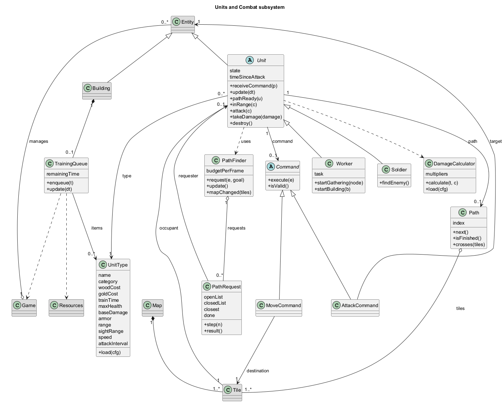
Felelősség: egy egység a pályán. Megcsinálja, amit parancsba kapott, megy az útján, támad, és meghal, ha elfogy az életereje.
Együttműködők: UnitType, Command, Path, PathFinder, DamageCalculator, Game, Tile, Entity (ős).
Attribútumok
| Név | Típus | Leírás |
|---|---|---|
| type | UnitType | Milyen egység ez, innen tudja a sebzését, hatótávját, sebességét stb. |
| state | UnitState: Idle, Moving, Attacking vagy Dead | Mit csinál éppen (6.3. ábra). |
| command | Command (lehet üres) | Az éppen kapott parancs. |
| path | Path (lehet üres) | Az út, amin éppen megy. |
| timeSinceAttack | float (mp) | Mennyi idő telt el az utolsó ütés óta. Ha eléri a két ütés közti időt, jöhet a következő. |
Az életerőt, a gazdáját és a helyét az Entitytől kapja.
Operációk
| Név | Argumentumok | Működés |
|---|---|---|
| receiveCommand | p: Command | Elfelejti a régi parancsot, megjegyzi az újat, és szól neki, hogy induljon (p.execute(this)). |
| update | dt: float | Minden képkockán lefut. Ha az egység mozog, lép egyet az útján. Ha támad, növeli az utolsó ütés óta eltelt időt, és ha letelt, üt. |
| pathReady | u: Path | Ezt a PathFinder hívja, amikor megvan az út. Ha az út üres, az egység áll tovább, különben elindul. |
| inRange | c: Entity | Megmondja, hogy a célpont elég közel van-e ahhoz, hogy üsse. |
| attack | c: Entity | Kiszámoltatja a sebzést, levonja a célponttól (c.takeDamage()), és újraindítja az időmérést. |
| takeDamage | damage: int | Levonja az életerőből. Ha elfogyott, meghívja a destroy() részt. |
| destroy | nincs | Dead állapotba kerül, felszabadítja a mezőt, és szól a Game-nek, hogy vegye ki. |
Felelősség: a munkás. Mindent tud, amit egy egység, de ezen felül gyűjteni és építeni is tud. Magától nem támad, csak ha a játékos megmondja neki (F-HARC-02).
Együttműködők: Unit (ős), GatherTask, Building, ResourceNode.
Attribútumok
| Név | Típus | Leírás |
|---|---|---|
| task | GatherTask vagy Building (lehet üres) | Amit éppen gyűjt vagy épít. A gyűjtés menete az 5. fejezetben van. |
Operációk
| Név | Argumentumok | Működés |
|---|---|---|
| startGathering | node: ResourceNode | Elindítja a gyűjtést ennél a forrásnál, és utat kér mellé. |
| startBuilding | b: Building | Megjegyzi, mit kell építenie, és utat kér mellé. |
Felelősség: harcos egység (közelharci, íjász vagy nehéz). Ha áll, figyel, és ha ellenség jön a látótávjába, megtámadja (F-HARC-12).
Együttműködők: Unit (ős), Game, AttackCommand.
Saját adata nincs, mindent a Unittól és a típusától kap.
Operációk
| Név | Argumentumok | Működés |
|---|---|---|
| findEnemy | nincs | Akkor fut le, ha a katona áll. Megkérdezi a Game-et, van-e ellenség a látótávjában, és ha van, a legközelebbit megtámadja. Ha a katona mozgásparancsot kapott, ez nem fut le. |
Felelősség: egy egységfajta adatai, amik játék közben nem változnak. A konfigurációs fájlból jönnek (F-HARC-04). Minden fajtából egy van, és az összes ilyen egység ezt használja.
Együttműködők: ConfigLoader, Unit, TrainingQueue, DamageCalculator.
Attribútumok
| Név | Típus | Leírás |
|---|---|---|
| name | string | Ez látszik a HUD-on, pl. "Archer". |
| category | Worker, Melee, Archer vagy Heavy | Ez alapján keressük a szorzót, és ebből derül ki, hogy munkás vagy katona lesz belőle. |
| woodCost, goldCost | int | Ennyibe kerül a képzés. |
| trainTime | float (mp) | Ennyi ideig tart a képzés. |
| maxHealth | int | Ennyi életerővel születik az egység. |
| baseDamage | int | Ebből indul a sebzés kiszámolása. |
| armor | int | Ennyivel kevesebbet sebeznek rajta. |
| range | float (mező) | Milyen messziről tud ütni. |
| sightRange | float (mező) | Milyen messziről veszi észre az ellenséget. |
| speed | float (mező/mp) | Milyen gyorsan megy. |
| attackInterval | float (mp) | Mennyi idő telik el két ütés között. |
Operációk
| Név | Argumentumok | Működés |
|---|---|---|
| load | cfg: ConfigLoader | Beolvassa az összes fajta adatait. Ha valami hiányzik vagy rossz, egy alapértéket használ helyette (F-MOT-07). |
Felelősség: egy épület (főépület vagy kaszárnya) képzési sora. Megnézi, van-e elég nyersanyag, levonja az árat, méri az időt, és a végén megcsináltatja az egységet (F-HARC-05, F-HARC-06).
Együttműködők: Building, UnitType, Resources, Game, HUD.
Attribútumok
| Név | Típus | Leírás |
|---|---|---|
| items | Queue<UnitType> | A képzésre váró egységek sorrendben. |
| remainingTime | float (mp) | Mennyi van még hátra a sor elején álló egységből. |
| building | Building | Melyik épület sora ez. Az új egység mellette jelenik meg. |
Operációk
| Név | Argumentumok | Működés |
|---|---|---|
| enqueue | t: UnitType | Megnézi a limitet és a nyersanyagot. Ha valami nem stimmel, nemet mond, és a HUD kiírja, mi a baj. Ha minden jó, levonja az árat, és beteszi az egységet a sor végére. |
| update | dt: float | Csökkenti a hátralévő időt. Ha elfogyott, megcsináltatja az egységet a Game-mel, és jön a következő. |
Felelősség: ami minden parancsban közös.
Együttműködők: Unit, Selection (ez csinálja a játékos parancsait), AIController.
Operációk
| Név | Argumentumok | Működés |
|---|---|---|
| execute | e: Unit | Itt nincs kidolgozva, a MoveCommand és az AttackCommand mondja meg, mit csináljon az egység. |
| isValid | nincs | Megmondja, hogy a parancsot még végre lehet-e hajtani. |
Felelősség: elküldi az egységet egy adott mezőre. Útközben az egység nem áll meg harcolni.
Együttműködők: Command (ős), PathFinder.
Attribútumok
| Név | Típus | Leírás |
|---|---|---|
| destination | Tile | Ide kell menni. |
Operációk
| Név | Argumentumok | Működés |
|---|---|---|
| execute | e: Unit | Utat kér az egységnek a célhoz. |
| isValid | nincs | Mindig igaz. |
Felelősség: megtámadtat egy célpontot. Ha kell, az egység előbb odamegy (F-HARC-11).
Együttműködők: Command (ős), Entity, PathFinder.
Attribútumok
| Név | Típus | Leírás |
|---|---|---|
| target | Entity | Az egység vagy épület, amit meg kell támadni. |
Operációk
| Név | Argumentumok | Működés |
|---|---|---|
| execute | e: Unit | Ha a célpont elég közel van, az egység rögtön támad. Ha nincs, utat kér mellé. |
| isValid | nincs | Igaz, amíg a célpont él. |
Felelősség: kiszámolja, mennyit sebez egy ütés, a 6.3.1 pont szerint (F-HARC-14, F-HARC-15).
Együttműködők: Unit, UnitType, Entity, ConfigLoader.
Attribútumok
| Név | Típus | Leírás |
|---|---|---|
| multipliers | Map<(Category, Category), float> | A szorzók, pl. nehézegység épület ellen 2,0. A konfigurációs fájlból jön. |
Operációk
| Név | Argumentumok | Működés |
|---|---|---|
| calculate | t: UnitType, c: Entity | Visszaadja a sebzést: max(1, alapsebzés x szorzó - védelem). |
| load | cfg: ConfigLoader | Beolvassa a szorzókat. Ahol nincs megadva szorzó, ott 1-et használ. |
Felelősség: A*-gal utat keres, a munkát elosztja több képkockára (F-UTV-03, F-UTV-08), és új utat keres, ha a térkép megváltozik (F-UTV-07).
Együttműködők: PathRequest, Path, Tile, Map, Unit.
Attribútumok
| Név | Típus | Leírás |
|---|---|---|
| requests | Queue<PathRequest> | A még be nem fejezett keresések. |
| budgetPerFrame | int | Egy képkockán legfeljebb ennyi mezőt néz meg. A konfigurációs fájlból jön. |
Operációk
| Név | Argumentumok | Működés |
|---|---|---|
| request | u: Unit, goal: Tile | Új kérést tesz a sor végére. Ha az egységnek már volt kérése, azt eldobja. |
| update | nincs | Képkockánként egyszer fut le. A sor elején lévő kéréseken dolgozik, amíg el nem fogy a keret. Ha egy út elkészült, odaadja az egységnek (pathReady()). |
| mapChanged | tiles: List<Tile> | Akinek az útja ezeken a mezőkön megy át, annak újra keres utat. |
Felelősség: egy félbehagyott keresés, hogy a következő képkockán ott lehessen folytatni, ahol abbamaradt.
Együttműködők: PathFinder, Tile, Unit, Path.
Attribútumok
| Név | Típus | Leírás |
|---|---|---|
| requester | Unit | Kinek kell az út. |
| start, goal | Tile | Honnan indul és hová megy. |
| openList | PriorityQueue<Tile> (becsült úthossz szerint) | A még megnézendő mezők. |
| closedList | List<Tile> | A már kipipált mezők. |
| closest | Tile | Az eddig talált, célhoz legközelebbi mező (F-UTV-04). |
| done | bool | Véget ért-e már a keresés. |
Operációk
| Név | Argumentumok | Működés |
|---|---|---|
| step | n: int | Legfeljebb n mezőt néz meg a 6.3.2 pont szerint, és visszaadja, hányat nézett meg. |
| result | nincs | Ha kész a keresés, összerakja belőle az utat. |
Felelősség: az út, amin egy egység megy, és hogy hol tart rajta.
Együttműködők: Unit, Tile.
Attribútumok
| Név | Típus | Leírás |
|---|---|---|
| tiles | List<Tile> | Az út mezői sorban. |
| index | int | Hányadik mező jön. |
Operációk
| Név | Argumentumok | Működés |
|---|---|---|
| next | nincs | Visszaadja a következő mezőt. |
| isFinished | nincs | Igaz, ha az egység már az utolsó mezőn van. |
| crosses | tiles: List<Tile> | Igaz, ha a hátralévő út átmegy valamelyik megadott mezőn. |
Ez a rész a gépi ellenfélről szól, vagyis az SRS F-MI pontjairól. Az ellenfél előre megírt szabályok szerint játszik (F-MI-01). A Use case nem tartozik hozzá, mivel nem a játékos kezeli, hanem a játékos ellen játszik.
Az MI pontosan úgy játszik, ahogy a játékos. Egységet a TrainingQueue enqueue() résszel képez, parancsot a Unit receiveCommand() résszel ad, építeni pedig ugyanúgy épít, ahogy az 5. fejezetben le van írva. Van saját Factionje és saját Resources-e, így nem tud csalni ezáltal nem kap több nyersanyagot, és jobb szorzói sincsenek (F-MI-02).
Más fejezetből használt osztályok, amiket itt nem írunk le újra: Game, Map, Tile, ConfigLoader (3. fejezet), Faction, Building, Resources, ResourceNode (5. fejezet), Unit, Worker, Soldier, TrainingQueue, MoveCommand, AttackCommand, PathFinder (6. fejezet).
Az MI összes beállítható száma a Difficultyben van, és a konfigurációs fájlból jön (F-MI-18). Ezek a: mennyi idő telik el két döntés között (ez az MI reakcióideje), legalább mennyi idő kell két építés között, hány munkást akar, hány katona kell egy támadáshoz, mennyi idő teljen el két támadás között, hány katona alatt vonul vissza, és mekkora területet véd a bázisa körül. A könnyű és a normál szint csak ezekben a számokban tér el (F-MI-16). Az építési sorrend is a konfigurációs fájlban van. Így az MI-t újrafordítás nélkül lehet könnyebbre vagy nehezebbre állítani, és erre szükség is lesz, hogy a játék kiegyensúlyozott legyen (F-MI-17).
Itt az egyik osztály sem származik a másikból. Az építést és a támadást két külön osztályba tettük, mert más dolgokkal foglalkoznak, az egyik a gazdasággal, a másik a katonákkal. Így külön is ki lehet próbálni őket, hogy az MI éppen mire figyel, azt az AIController tartja számon.
Az állapot azt mutatja, mire figyel éppen az MI. A munkások elosztása és a lerombolt épületek pótlása mindig megy, bármelyik állapotban van. Az állapotból csak az derül ki, mire költ, és mit csinálnak a katonái.
Ha az MI főépülete elpusztul, vége a meccsnek, és az MI leáll.
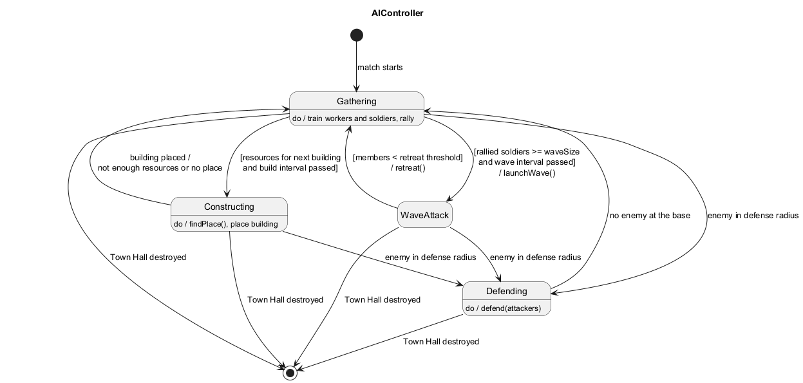
Az MI nem gondolkodik minden képkockán, csak bizonyos időnként, amit a nehézségi szint ad meg (F-MI-10). Egy ilyen körben ez történik:
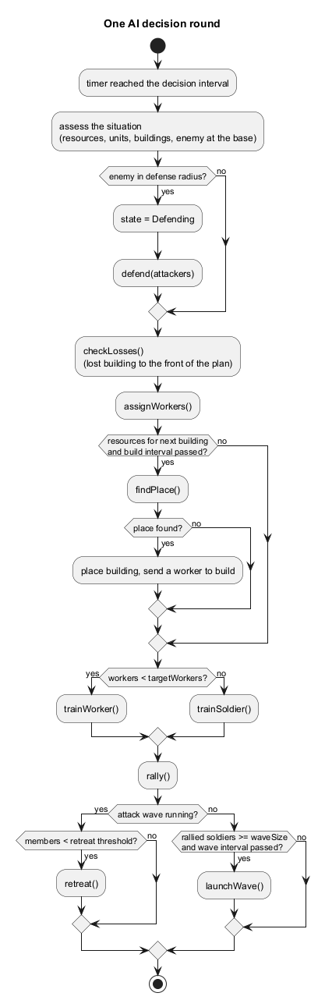
Amit tudni kell hozzá, hogy mennyi fája és aranya van az MI-nek, és melyik munkás mit csinál. Az eredmény az, hogy melyik munkás mit gyűjtsön.
Amit tudni kell hozzá: mekkora az épület, hol van a főépület, és melyik mező szabad. Az eredmény az, hogy hova kerüljön az épület, vagy az, hogy nincs neki hely.
A támadó katonák ebben a sorrendben választanak célpontot (F-MI-13):
Egy ellenséges munkás nem veszélyes, ezért a katonák előbb a katonákat támadják. Ha csak munkás van a közelben, akkor azt, és csak utána mennek az épületekre. Hogy mit lát egy katona, az a látótávjától függ (6. fejezet, UnitType).
A szürke osztályok a 3., 5. és 6. fejezethez tartoznak, ott vannak leírva.
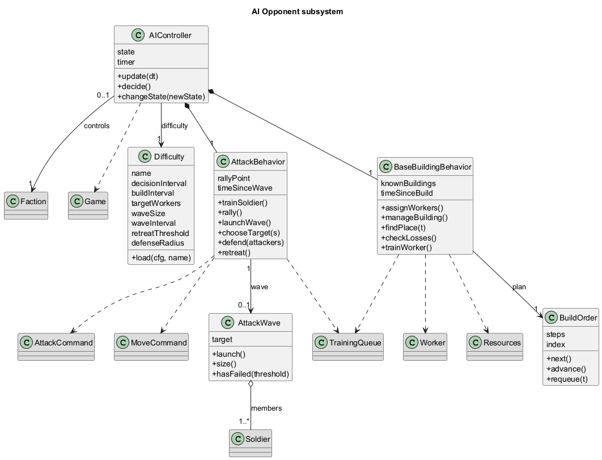
Felelősség: ez irányítja a gépi ellenfelet. Időnként döntést hoz, tudja, mire figyel éppen az MI, és szól a két részének, hogy dolgozzanak.
Együttműködők: Faction, Difficulty, BaseBuildingBehavior, AttackBehavior, Game.
Attribútumok
| Név | Típus | Leírás |
|---|---|---|
| faction | Faction | Az MI által irányított fél. Hozzá tartozik a nyersanyag, az egységek és az épületek. |
| difficulty | Difficulty | A választott nehézség számai. |
| state | AIState: Gathering, Constructing, WaveAttack vagy Defending | Mire figyel éppen (7.1. ábra). |
| timer | float (mp) | Mennyi idő telt el az előző döntés óta. |
| baseBuilder | BaseBuildingBehavior | Ez a rész foglalkozik a gazdasággal és az építéssel. |
| attacker | AttackBehavior | Ez a rész irányítja a katonákat. |
Operációk
| Név | Argumentumok | Működés |
|---|---|---|
| update | dt: float | Minden képkockán lefut, de csak az időt méri. Ha letelt a döntések közti idő, nullázza az időt, és meghívja a decide() részt. |
| decide | nincs | Lefuttat egy döntési kört a 7.2. ábra szerint. |
| changeState | newState: AIState | Átállítja, mire figyeljen az MI. Ha Gathering állapotba vált, a katonákat a gyülekezőhelyre küldi. |
Felelősség: egy nehézségi szint számai (F-MI-16, F-MI-18).
Együttműködők: ConfigLoader, AIController, BaseBuildingBehavior, AttackBehavior.
Attribútumok
| Név | Típus | Leírás |
|---|---|---|
| name | string | "Easy" vagy "Normal". |
| decisionInterval | float (mp) | Ennyi idő telik el két döntés között, vagyis ilyen gyorsan reagál az MI. |
| buildInterval | float (mp) | Két építés között legalább ennyi időnek el kell telnie. |
| targetWorkers | int | Eddig képez munkást. |
| waveSize | int | Ennyi katona kell egy támadáshoz. |
| waveInterval | float (mp) | Két támadás között legalább ennyi idő telik el. |
| retreatThreshold | int | Ha a támadó csapat ennél kisebbre fogy, az MI hazahívja. |
| defenseRadius | float (mező) | Ekkora terület a főépület körül számít a bázisnak. Ha ide ellenség jön, az MI védekezik. |
Operációk
| Név | Argumentumok | Működés |
|---|---|---|
| load | cfg: ConfigLoader, name: string | Beolvassa a kért szint számait. Ha valami hiányzik, a normál szint számát használja helyette. |
Felelősség: ebben a sorrendben épít az MI (F-MI-05), például először kaszárnyát, aztán további épületeket, ahol egységet lehet képezni.
Együttműködők: BaseBuildingBehavior, ConfigLoader.
Attribútumok
| Név | Típus | Leírás |
|---|---|---|
| steps | List<BuildingType> | Az épületek abban a sorrendben, ahogy fel kell húzni őket. |
| index | int | Hányadik épület jön. |
Operációk
| Név | Argumentumok | Működés |
|---|---|---|
| next | nincs | Megmondja, melyik épület jön, vagy azt, hogy a lista végére ért. |
| advance | nincs | Ha az épületet lerakta, továbblép a következőre. |
| requeue | t: BuildingType | A lerombolt épületet a következő helyre teszi a listában, így azt építi meg legközelebb. |
Felelősség: az MI gazdasága. Elosztja a munkásokat, munkást képez, épít, és pótolja a lerombolt épületeket (F-MI-03-tól F-MI-09-ig).
Együttműködők: AIController, BuildOrder, Difficulty, Resources, ResourceNode, Worker, Building, TrainingQueue, Tile.
Attribútumok
| Név | Típus | Leírás |
|---|---|---|
| plan | BuildOrder | Az építési sorrend. |
| knownBuildings | List<Building> | Az előző körben meglévő épületek. Ebből látszik, ha valami eltűnt. |
| timeSinceBuild | float (mp) | Ezzel méri, eltelt-e már a két építés közti idő. |
Operációk
| Név | Argumentumok | Működés |
|---|---|---|
| assignWorkers | nincs | A 7.3.1 pont szerint elküldi a munkásokat gyűjteni. |
| manageBuilding | nincs | Ha van elég nyersanyag a következő épületre, és eltelt a két építés közti idő, helyet keres, lerakja az épületet, és egy munkást küld építeni. Megmondja, sikerült-e. |
| findPlace | t: BuildingType | A 7.3.2 pont szerint megkeresi, hova kerüljön az épület. |
| checkLosses | nincs | Összeveti a mostani épületeket az előző körben megjegyzettekkel. Ami eltűnt, azt az requeue() résszel visszateszi a listába. |
| trainWorker | nincs | Ha kevesebb munkás van, mint amennyit akar, beállít egyet a főépület képzési sorába. |
Felelősség: az MI katonái. Katonát képez, összegyűjti őket, támad, védekezik, és ha kell, hazahívja őket (F-MI-11-től F-MI-15-ig).
Együttműködők: AIController, AttackWave, Difficulty, Soldier, Building, TrainingQueue, Game, MoveCommand, AttackCommand.
Attribútumok
| Név | Típus | Leírás |
|---|---|---|
| rallyPoint | Tile | Egy mező a bázison, ahol a katonák a támadásra várnak. |
| wave | AttackWave (lehet üres) | Az éppen úton lévő támadó csapat. |
| timeSinceWave | float (mp) | Ezzel méri, eltelt-e már a két támadás közti idő. |
Operációk
| Név | Argumentumok | Működés |
|---|---|---|
| trainSoldier | nincs | Ha van rá nyersanyag, beállít egy katonát a kaszárnya képzési sorába. |
| rally | nincs | Azokat a katonákat, akik nem tartoznak támadó csapathoz és épp nem csinálnak semmit, a gyülekezőhelyre küldi. |
| launchWave | nincs | Ha elég katona van a gyülekezőhelyen, és eltelt a két támadás közti idő, csapatot csinál belőlük, és elindítja őket. |
| chooseTarget | s: Soldier | A 7.3.3 pont szerint megmondja, kit támadjon a katona. |
| defend | attackers: List<Unit> | A bázisnál lévő katonákat a legközelebbi támadóra küldi. Ha a támadók többen vannak, mint a katonák, a munkásokat is beveti. |
| retreat | nincs | A támadó csapat maradékát hazaküldi a gyülekezőhelyre, és feloszlatja a csapatot. |
Felelősség: egy együtt támadó katonacsapat.
Együttműködők: AttackBehavior, Soldier.
Attribútumok
| Név | Típus | Leírás |
|---|---|---|
| members | List<Soldier> | A csapat élő katonái. |
| target | Tile | A játékos bázisa (egy mező a főépülete mellett). |
Operációk
| Név | Argumentumok | Működés |
|---|---|---|
| launch | nincs | Minden tagot elküld a cél felé. |
| size | nincs | Kiveszi a meghalt katonákat, és megmondja, hányan élnek még. |
| hasFailed | threshold: int | Igaz, ha a csapat a megadott létszám alá fogyott. |